我们的生活往往奠基于理性以及一般常识，真理却不倾向于这两者。
——蒂莫西·弗雷克（Timothy Freke）
调查结果就是在对某一教育现象进行调查之后，把它的结果整理成相应的文字资料。通过在整理的过程中发现问题，继而分析问题，揭示事物本质特征，找到事物的内部联系和规律。
在第3章中，关于研究的工具、数据收集和数据编码与分析等方面的具体情况已经展开了具体的阐述。在这一章中将对教师在数学广角中的教学情况的调查问卷，四、五、六年级学生数学广角学习情况调查问卷及学生测试卷所收集到的数据进行整理和分析，将定性分析和定量分析相结合，以达到了解教师教学情况，目前数学教师课堂教学的观念、教法选用等现状，小学生解决问题的能力和策略使用的现状以及学习数学广角时的态度与学习结果的情况。
人们把信念解释为个体的各种理解和感觉，它们形成了个体认识数学行为和从事数学工作的方式。 [1] 教师对数学学科的信念和学生对数学学科的信念都非常的重要。菲尼姆（Fen-nema）和纳尔逊（Nelson）指出，教师关于学校教育的主观性理解决定了课堂的真实运作情况。简单地说，即教师的教学信念决定了他所创设的课堂环境，而所创设的课堂环境反过来又影响着学生的数学学科信念。在当前新课改革背景之下，国家正在花费大量的财力、物力，进行多次、多途径的教师培训，力图改变教师的信念。教师的信念是一个复杂的组成，在已有的一些研究中，将教师信念的内容分为：关于学校愿景的信念；关于学校教育活动的信念（如教学、科研、管理等）；关于教师自我认知的信念；关于学生的信念；关于社会和家庭角色的信念；关于学校未来发展的信念等。为了了解数学广角教学中教师信念的基本情况，这项研究主要从教学信念入手。在设置调查问卷的时候，这一维度的题目主要是从范围更为广阔的教师的数学信念和较为具体的教师的数学广角教学观念进行设置，这在调查问卷中体现在第3、4、5、8、11、12、25题，共7题，运用SPSS软件对调查的结果分析如下：
3．您是怎么看待数学？（ ）
A．数学是一门工具性学科
B．数学是高度抽象的学科
C．数学是关于计算与空间的学科
D．数学是思维的学科
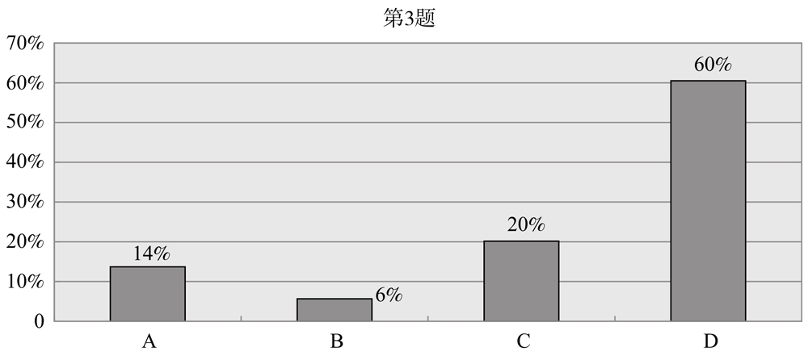
怎么看待数学是数学教师关于数学学科信念的反映，对教师的数学课堂教学有深层的影响。该题没有出现多选，从题目各选项人数分布情况看，60%的数学教师将数学看成思维的学科，20%的数学教师将数学看作关于计算与空间的学科。从统计结果初步得出：一是，大多数数学教师在数学教学的观念上比较注重学生思维的发展，认为数学学习的目标主要是发展学生的思维；二是，将数学教学目标主要定位为计算的教师数少，这有利于数学学科发展、学生思维能力的变革与发展。
4．您认为是否有必要花费时间对数学广角教学内容进行研究？（ ）
A．必需的，有助于教学
B．自学难，有一定的在职培训会更好
C．教学方法的多样化比内容研究更重要
D．没有必要，因为不是考试命题的重点
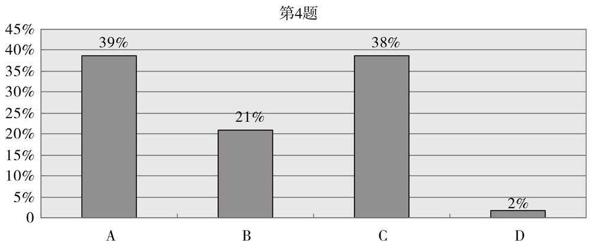
该题从侧面反映了教师对数学广角教学的态度和重视情况。由该题的选项统计结果可知，认为有必要对数学广角教学内容进行研究的数学教师（A选项和B选项）占60%，认为没有必要对其进行研究（C选项和D选项）的占40%。从统计结果初步得出：一半以上的数学教师对数学广角的教学内容较重视，但是自己又找不到有效的学习途径，只有极少数数学教师认为数学广角不是命题的重点，因此没有研究的必要。
5．对数学教学，您是否有自己的理解，是否有一个数学教学的总目标？（ ）
A．有，它有效地指导我的每一节课
B．有很多自己的想法，但是没有实施
C．有一点想法，但是没有深入思考
D．没有想法
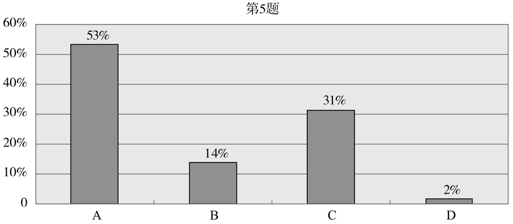
此题重在对数学教师的数学教学观念进行考查，深层次地反映数学教师对数学教学的思考。从题目选项的统计结果可知，53%的数学教师有自己的数学教学总目标，47%的数学教师处于仅有想法而没有实施，或者没有深入思考的状态。从统计结果初步得出：一半以上的数学教师对数学教学有自己的理解，有自己的数学教学总目标；有接近一半的数学教师对数学教学总目标还需要有进一步的思考和加强，这说明数学教师关于数学教学总目标的掌握情况比较一般。
8．在数学广角教学中，您对制定教学目标的态度是（ ）。
A．教学目标不太重要，教学过程设计更重要
B．数学目标很重要，但制定教学目标存在困难
C．制定的教学目标比较随意、笼统
D．以教学参考书的教学目标为准，稍加改动
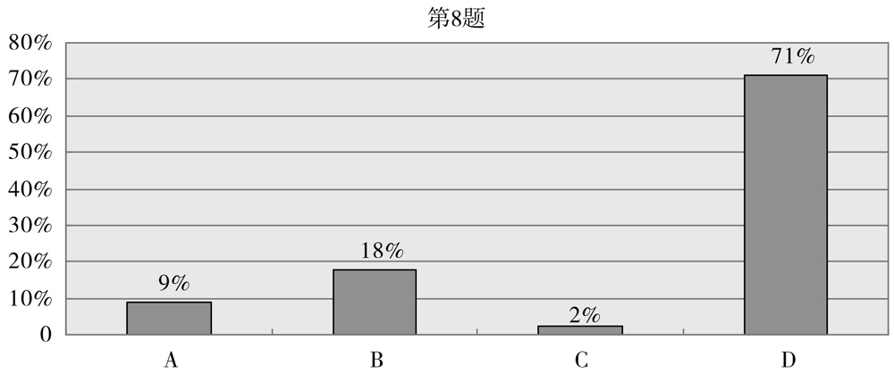
关于数学广角教学目标的制定有很多的情况，本题的设置主要以数学教师对数学广角教学目标的态度为切入点，借此来反映数学教师对此部分内容的教学态度。从题目选项统计情况看：71%的数学教师在数学广角教学目标制定上都以教材配套的教学参考书为准，再结合着学生的学习情况改动；18%的数学教师在制定数学广角教学目标的时候存在困难；11%的数学教师认为制定数学广角教学目标不是很重要，故制定该部分教学目标时比较笼统，或者更加注重教学过程的设计。从统计结果初步得出：数学教师在数学广角目标制定的态度上，仍旧不太注重教学目标，且在该部分教学目标的设置上存在困难。
11．您认为数学广角的学习，对学生的最大影响是（ ）。
A．掌握解决问题的方法与思路
B．联系生活实际，增加对数学的认识
C．培养并锻炼学生的思维和数学品质
D．打击学生学习数学的自信心
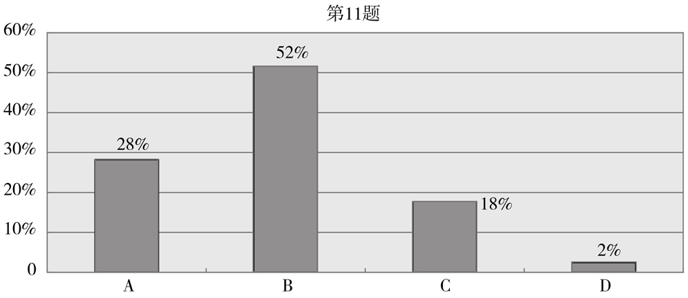
这是数学教师对学生学习数学广角的意义的态度类题目。从选择各选项的数学教师人数统计情况看：52%的数学教师认为学习数学广角对学生的最大影响是“联系生活实际，增加对数学的认识”；28%的数学教师认为是“掌握解决问题的方法与思路”；18%的数学教师选择“培养并锻炼学生的思维和数学品质”；仅2%的数学教师认为该部分内容的学习会打击学生学习数学的自信心。从统计情况初步得出结果：首先是关于数学广角学习对学生影响的态度比较多元，但是数学教师更加注重的是如何通过数学广角增加学生对数学的认识，而对如何通过数学广角来培养锻炼学生思维的态度关注较少。这个统计结果与第3题中有60%的数学教师认为数学是一门思维的学科不相符合，通过进一步分析可以知道，有部分数学教师不同意数学广角的教学可以发展学生的思维，这在后来的调查中得到验证。其次反映出发展思维的抽象性和长期性。
12．您认为数学广角与其他教学内容的最大差异是（ ）。
A．数学广角对教师、学生成长同样具有重要意义
B．数学广角思维含量过高，师生双方都感觉困难
C．数学广角更贴近生活
D．数学广角意义不大，可有可无
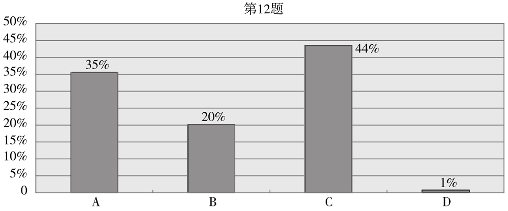
此题主要从侧面反映数学教师对数学广角的态度和对数学广角的认识。从各选项的人数统计看：各位数学教师在和其他教学内容的比较中，44%的数学教师认为数学广角更接近生活；20%的数学教师认为该部分内容思维含量过高，师生双方都感觉困难；35%的数学教师认为数学广角和其他内容一样对教师和学生的成长具有重要意义；仅1%的数学教师认为数学广角可有可无。从统计结果可以初步得出：大部分数学教师认为数学广角的教学与其他内容一样重要，而数学广角的内容与学生的生活更加贴近。但也有小部分数学教师认为数学广角的思维含量过高，数学教师的教学和学生的学习都存在困难。据此可以看出数学教师对数学广角教学的认可度高。
25．在数学广角的教学中，您是否重视帮助学生建立知识之间的联系和发展创造力与思维能力？（ ）
A．总是很重视
B．经常重视
C．不太重视
D．不重视
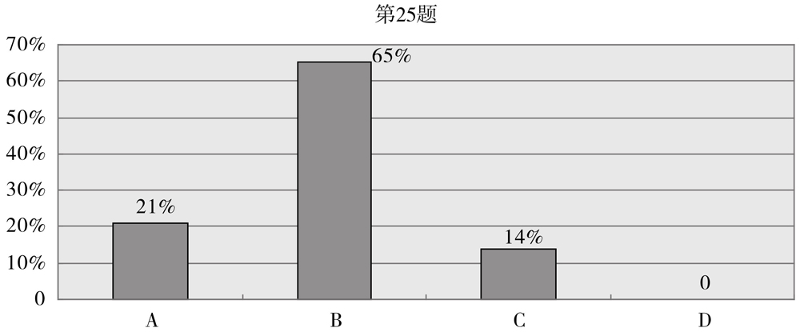
此题从教师教学是否注重发展学生思维来反映数学教师的教学信念，即在注重知识的同时，能否注重学生思维的发展。从各选项的统计结果看；21%的数学教师总是重视；65%的数学教师经常重视；14%的数学教师不太重视。从统计结果初步分析得出：大部分数学教师在数学广角教学中都注重学生思维和创造力的发展。
现在，这项研究将转而探讨数学教师教龄的长短与他们的数学教学信念之间有怎么样的相关性。在这里将所有的数学教师都分成四组：第一组是具有0～5年教龄的数学教师；第二组是具有6～10年教龄的数学教师；第三组是具有11～15年教龄的数学教师；第四组是具有16年以上教龄的数学教师。在此分组的基础上，运用卡方检验，了解不同组之间是否存在显著性差异。
χ 2 检验的P 值可以证明数学教师的数学态度和信念。对这四组数学教师设置7个题目并统计不同评价上的人数分布，可以得出，除了在数学目标的认识态度上有显著性差异之外，其余并没有显著性差异。也就是说，数学教师教龄的长短在关于教师的数学态度和信念的认识上除了数学目标制定方面不同外，其余没有明显的影响。
概括本节内容，从7个题目的统计结果初步分析得出：数学教师们关于数学广角的教学信念总体上存在差异。从总体上看，数学教师对教学目标的态度以及数学广角教学的态度都有自己的思考。一半以上数学教师对数学广角的态度都较为理性和全面，认为数学广角的教学更贴近学生的生活，有利于学生思维的发展；通过数学广角的学习，能增加学生对数学的认识，但是思维含量过高，教学中存在困难。在数学广角教学意图方面，数学教师存在制定目标笼统，在制定教学目标方面感到困难，且存在不重视教学目标的情况。
数学教师的教龄对数学广角信念方面的影响主要体现在目标认识态度上：从SPSS导出的图可以看出，教龄集中在0～5年的数学教师在制定数学目标上的均值是3分，这表明相关教师制定的教学目标都较随意和笼统，而教龄在11年以上的数学教师在制定教学目标时主要以数学参考书的教学目标为准。
面谈资料和数据的分析：
与调查问卷的数据比较，针对数学教师的数学态度和信念对2名数学教师进行访谈。此访谈更加具有针对性和全面性，同时，是对调查问卷数据的印证与深入了解。
在面谈中，围绕着数学教师的数学态度和信念进行询问，当出现简单的回答时，面谈者会根据数学教师的具体情况围绕相关问题做进一步的发问，以求得到更深入的了解。下面根据每一个问题，分别描述教师对面谈问题的回答。
与数学教师A的面谈：
（教师A是一名女数学教师，教龄17年，参加昆明市某名师工作室。当提到数学广角时，她显得很兴奋，有很多想说的话。她的课堂给面谈者的初步印象是：学生的思维非常活跃，而且非常喜欢做一些挑战性的事情。）
面谈者：老师，您喜欢上数学广角的教学吗？
教师A：我很喜欢数学广角的内容，孩子们也喜欢。虽然我们要注重学生基础知识的掌握，但是在基础数学的价值中也要注重学生数学经验的积累，这些将在以后的生活中影响到学生的方方面面。
面谈者：老师，您现在教学数学广角和您刚刚接触该部分内容时相比有什么不同呢？
教师A：从以前的讲、学、记公式模式转变成了发现、经历过程。一开始尝试讲这部分内容的时候，自己方法少、活动少，让学生经历的也少，而且有时候还是无效的。后来自己反省、找教学方法、找策略，再后来就能够做到在课堂上让学生自己去活动、经历，然后自己来反思、找方法、总结。比如，在教授圆的时候，我就体会到了学生自己经验的那种影响力，孩子不会做的时候，他会通过重复那个经历的过程来寻找方法，慢慢发现，学生的思维更灵活，我对此进行总结，做题的方法也多了；又比如，上学期学过的数学广角，我主要是用模型、符号或者画图来代替抽象的语言，虽然在总结练习的时候还是有很多孩子做不出来，但是也没有关系，重点是他们有了自己的思考，因为这部分内容一般都需要老师来指导和总结。
面谈者：老师，您觉得您的这种改变主要来源于什么？用您现在的这种新的教学方式，孩子又有哪些变化呢？
教师A：这种改变，主要还是思想观念的转变，学生对数学广角的认识更深入了，尤其是思想观念变了，我现在是各种课都尽可能地让学生多参与、多经历。新思想指导教学的这种模式，虽然学生对结论不一定记得牢，但是他们会用自己经历的这个过程去做题。不过由于孩子本身的思维起点、学习基础不同，而且有的学生适合动手，有的学生适合直接记忆，因此大家的接受程度会有很大的差异。针对这种情况，对于那些实在学不会的学生，我只能自己先讲，讲完后让小组内已学会的学生给不会的学生讲。
面谈者：老师，您觉得数学广角教学目标的制定与教学流程的设计中存在的困难有哪些？
教师A：数学广角教学目标主要是渗透数学思想方法，我一般不太重视让学生去记住结论和公式，但是数学思想方法的渗透是一个长期的过程，要短期做到还是挺难的，而且有时候要找到数学广角内蕴含的数学思想方法也会有难度，所以我常常会向对此特别有研究的老师请教。
面谈者：您怎么看待学生的学习结果，尤其是有些学生在经过一段时间后可能连公式都不记得了？
教师A：对公式忘记了都无所谓的，主要是方法，而且一般在前后的学习中会去渗透运用这些方法，比如符号的方法。
与教师B的面谈：
（教师B是一名男数学教师，教龄20年，是他所在学校和某市的名师工作室领导人物之一。提到关于数学广角的访谈，他非常乐意，也想把他的收获同面谈者交流。教师B看上去很和蔼、很朴素，眼睛闪烁着智慧的光芒。刚刚走进办公室，他就说：“我们一线教师虽然在理论研究方面可能会有很多不足，但是在实践方面的经验还是挺多的，你有什么尽管问……”现把整个谈话过程整理如下。）
面谈者：老师，您喜欢数学广角的教学吗？
教师B：非常喜欢。就说今天上午吧，恰好讲到一道有关模型建立的题：用小棒拼四边形，第n 个四边形用几根小棒。让孩子自己画、数，发现其中小棒数的规律，总结出3n +1的公式，接着又让孩子用同样的办法探索拼成n 个三角形要多少小棒。这样的题孩子很喜欢、很感兴趣，讲到这个的时候，孩子的情绪都很高涨，还自己提出：去探索拼n 个这样的正六边形用n 根小棒。此题就是一个模型的建立，其实这样的题目重在让孩子去感受数学。数学广角中的烙饼问题、打电话问题都是非常典型的模型教学题。
面谈者：老师，在您执教的过程中，数学广角的教学经历了一个什么样的变化？
教师B：我从一开始把数学广角当成应用题来教，转变到了现在的重经验和体验，学生从中去感悟思想方法。私下我也会通过听专家讲座、看参考资料等来提升自己。而且我非常喜欢把数学广角里的思想方法与课本上的其他内容关联起来，让学生随时都能够感受到数学的乐趣，我现在一直在采用这样的方式去教学。去年，我的几个学生在没有参加过小升初考试培训的情况下，都考上了我们这边的重点中学。
面谈者：老师，您觉得数学广角教学目标的制定与教学流程的设计中存在的困难有哪些，或者是有什么想法？
教师B：学校里搞应试教育的老师很多，他们的班级平均分都很高，这个我是比不上的。像数学广角这样的内容不会受到他们的重视，只是记忆一些结果，通过反复做题就可以。但是我觉得，小学数学教学用得最多的就是四则运算，给孩子形成的思维定式就是数学似乎都是运用计算，而数学广角的教学可以让孩子多一种学习数学的思维方式，拓展孩子对数学的认识，拓展孩子数形结合的思想，能让孩子去多方位地感受数学。因此，在目标设计上我没有什么困惑，我很坚信地去让学生多方位地感悟数学思想方法是正确的，不过有时候我也不太确定我的做法是否正确，过几天就有专家过来听课了，我正好展示一下我的这些教学想法，希望得到一些指导。
从以上两次访谈看出，教师A非常喜欢数学广角，经历了教学成长的过程。她一开始将数学广角当成一般的内容上，直到了解到数学广角的目标是渗透数学思想方法，她才开始数学广角教学的新尝试，这种尝试使她的课堂和学生都发生了变化。在教学的过程中，教师A发现学生自己归纳总结较困难，而且总会有部分内容是学生无法理解的。在目标的制定方面她围绕数学思想方法，但是有时候自己难以真正地把握数学广角要渗透的思想方法。
教师B非常爱研究教学，他说学校里有很多教师不是很重视数学广角，还是把考分放在第一位。但他自己对数学教学有深入的理解，他认为数学不仅是计算，最重要的是思想方法，因此他非常注重数学广角的教学，并且要把这些思想方法与课本相关内容联系起来。教师B存在的困惑是自己这样做是否正确，是否符合现在的教学理念。
可以看出，教师教授数学广角态度的转变来自认识的转变，而这种认识来自于专家的培训、启发和自己进一步的兴趣、追求和反思。对数学广角认识的转变是教学转变的首要条件，教师的兴趣是转变的动因，而教师进一步的学习则是转变的必要保障。
关于教师知识方面，总的来说，在这一研究领域里主要存在三大问题：
（1）教师需要什么知识？
（2）教师具有什么知识？
（3）教师怎样发展他们的知识？ [2]
这一节关注的焦点是教师具备什么知识和教师怎么发展他们的知识。教师要具备的知识，集中于教师学科知识与教学知识，因此本节内容围绕数学广角从教师的教学知识和数学广角的知识两个维度进行分析，涉及的题目是2、6、7、9、10、24、30。具体分析如下：
2．在数学广角教学的过程中，您能够灵活选用讲练结合、引导发现、实践活动、讨论交流、自学辅导、复习总结等方式指导学生学习吗？（ ）
A．完全能
B．一般能
C．偶尔能
D．几乎不能
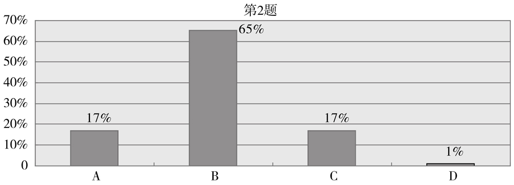
教师的教学法知识包括教师的教学程序知识，例如，计划的有效策略、课堂程序、行为管理技术、课堂组织程序和启发技术。此题从侧面反映教师课堂程序知识与启发技术多样性的情况。从各选项统计情况看：82%的数学教师在课堂教学模式知识方面掌握较好；18%的数学教师对这块知识的掌握和灵活运用上存在困难。依此可以说明：教师在课堂程序和启发技术这一方面的知识掌握较好，但仍有部分教师需要提高。
6．您能否根据教学的内容和教学对象选择适合的教学方法，以达到具有启发性，能调动学生积极性的效果？（ ）
A．完全能
B．基本能
C．偶尔能
D．几乎不能
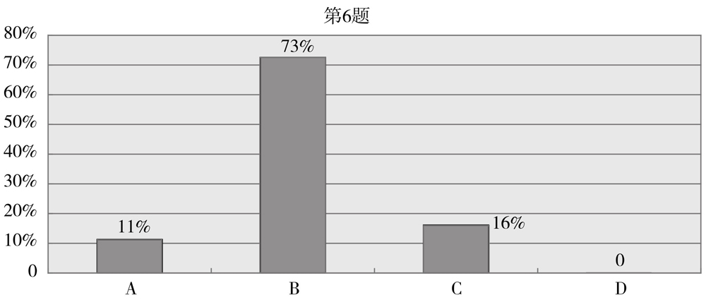
从教师选择教学方法的能力角度去反映教师教学法知识的掌握情况。教师要能够选择有效的教学方法，必须具备教学法知识、教学内容知识和学生知识，并且能够根据具体的情况进行思考、判断和运用。从各选项的数据统计情况看：84%的数学教师在选择有效教学方法方面情况较好，16%的数学教师在选择有效教学方法方面存在困难。可以初步反映出：教师在教学法知识和教学方法的选择上整体情况较好。
7．在数学广角教学过程中，您主要是通过什么途径做到面向全体学生，体现因材施教的？（ ）
A．从课堂发言和回答问题上兼顾
B．从分层作业布置上入手
C．总是换一种方式表达重点、难点
D．没有特别考虑
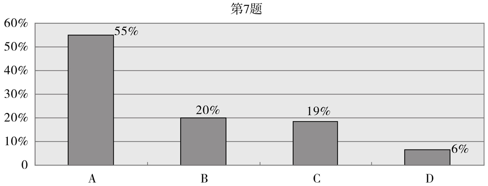
该题是一个从侧面反映教师教学法知识的题目。教师要做到因材施教，需要较好的课堂组织能力和对学生的观察能力。从各选项的统计结果看：55%的数学教师通过课堂发言和回答问题来兼顾所有学生，体现因材施教；20%选择从作业布置上去实现因材施教；19%的教师选择通过教学过程中使用各种方式，或者换一种说法来满足学生的不同需求；6%的教师在这一问题上没有特别的考虑。从中可以反映出：教师在实现因材施教方面存在较大的差异，体现出因材施教受到教师的重视，方法多元，向深层次方面发展。
9．您获得数学广角教学内容的知识最有效的途径是（ ）。
A．教学参考书和自身的教学反思
B．学校集体备课、教研活动和公开课
C．网络资源
D．大学课堂与其他书籍和方式
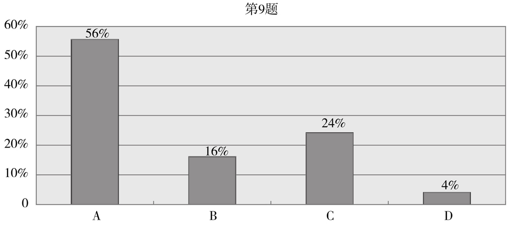
此题是关于教师知识来源的题目，目的是了解教师获取数学广角知识的途径，即教师的知识主要是从哪里来的。已有的研究表明：教师的教材知识主要来源于知识的教学反思和与同事的日常交流。从以上各选项的统计情况看，与已有研究结果一半吻合。从统计的数据看：56%的数学教师获取知识的有效途径是从教学参考书和自身的教学反思中获得；24%的数学教师通过网络资源获得；16%的数学教师通过参加教师集体备课、教研活动与公开课获得；4%的数学教师通过大学课堂与其他书籍和方式获得。这初步反映出获得数学广角相关知识的有效途径和我们平时想的不同，在一般的观念中，教师的这方面知识应该主要来源于教师的集体备课、教研活动和公开课，但是调查结果显示教师的数学广角知识来源主要是教学参考书和自身的教学反思，其次是网络资源。
10．您在数学广角教学中存在的最大困惑是（ ）。
A．相关知识不够，对有些模型的建立理解不透彻
B．有时不能解决学生做题困难和结论易忘的问题
C．有时找不准教学目标的达成程度
D．在发展学生思维方面存在困难
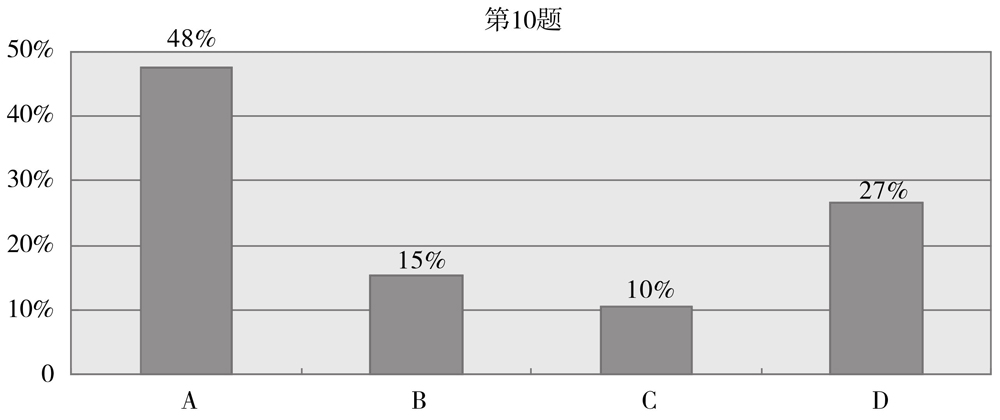
此题以教师在数学广角教学中存在的最大困惑为切入点，从侧面反映教师在数学广角教学内容方面的知识掌握情况和存在的最大困难。从统计数据看：48%的数学教师认为自己在数学广角方面的知识储备不够，对有些模型的建立理解不透彻；27%的数学教师认为自己在发展学生思维方面存在困难；15%的数学教师认为最大的困惑是，有时不能够解决学生做题困难和结论易于遗忘的问题；10%的数学教师认为自己在教授这部分内容时，有时会找不准教学目标的达成程度。从调查结果可以初步分析出：数学广角内容本身的难度是对教师教学的一大挑战，教学中把握学生的思维特点、教授记忆的策略等都是教学中的难点。根据这个结果可知，教师对数学广角教学内容的学习有待加强，在发展学生的思维、教授记忆策略、解题策略等方面也有待加强。
24．您是如何表达复杂的教学内容，使之化难为易的？（ ）
A．利用生活情景和熟悉的问题
B．儿童化语言、打比方和惟妙惟肖的描述
C．直观的图片、动作与多媒体演示
D．行动与体验
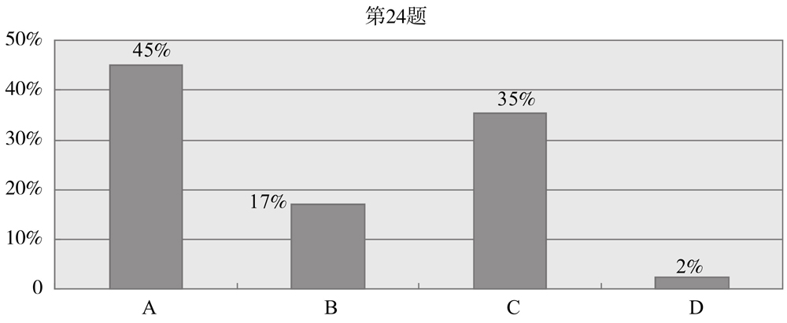
这是关于教师是如何表达复杂的教材内容的知识，即教师化抽象为具体的知识，能否将复杂的内容转变成学生理解的方式，能够直接区分教师的教学水平。从题目各选项的统计情况看：45%的数学教师用生活情景或者熟悉的问题教学；35%的数学教师用直观的图片、动作与多媒体演示教学；17%的数学教师用儿童语言、打比方和惟妙惟肖的描述教学；2%的数学教师用行动与体验教学。在这道题目的统计中还出现了多选，多选的情况为：有4名教师选择了A与C，有两名教师全选。在已有的研究中，通过实际情境和用具体的东西或者图片表达，有助于学生理解数学的抽象思想。因此，从以上的统计结果初步可以看出：教师在表达抽象的思想方法上偏向于使用语言和直观教具，选择直接活动的较少。
30．在上课的过程中，您为了把握好上课的节奏，调动学生的积极性，保证课堂效率，主要采用下列哪些方式？（ ）
A．运用各种外界奖励的办法
B．多变化吸引学生的注意力
C．长期培养学生对数学本身的热爱
D．顺其自然
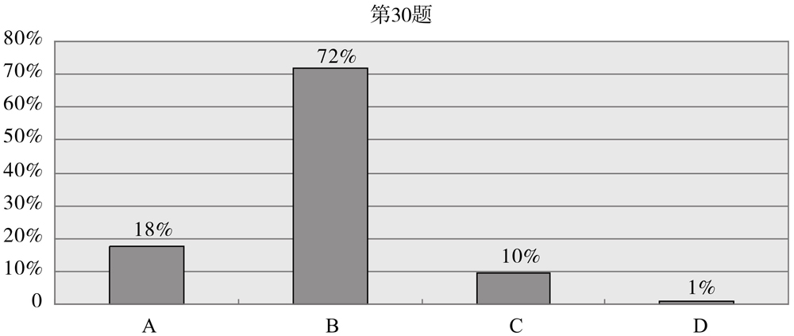
教师的课堂组织与管理的能力非常重要，此题从侧面反映教师的课堂组织能力和管理知识的情况。从各选项的统计情况看：90%的数学教师都能够做到把握好课的节奏，调动学生的积极性，吸引学生的注意力，同时能培养学生的注意力，说明教师在课堂管理与组织方面的情况较好。
现在，与教师数学信念的研究一样，接着探讨教师教龄的长短与他们的教学知识之间有怎么样的相关性，在此分组的基础上，运用卡方检验不同组之间是否存在着显著差异。
卡方检验的p 值除了第2题外，其余都是在0.05水平之上，因此这4个组的教师在各题上不存在显著差异。也就是说，教师的教龄并没有很明显地影响教师们对自身知识的看法。但是第2题存在显著差异，具体情况是教师在选择教学方法上，教龄在11年以上的教师掌握的教学方法比教龄短的教师掌握的教学方法好。
这一节通过调查问卷的分析，了解到教师在数学广角相关知识方面总体存在差异。总体上教师关于教学法的知识掌握得较一般，运用中存在困难；在数学广角教学的内容上存在困难，主要集中在全面掌握知识与建立模型方面；在数学广角知识获得的主要途径方面，教学参考书、个人经验与网络是主要获取途径，也就是自学，没有相关的专业培训或者著作可以用于教师学习；在语言表达知识方面，教师对抽象、复杂内容的表达整体情况一般，主要是用直观的语言方式帮助学生理解，而直接参与活动这种方式较少采用；从课堂组织方面的知识反映出，教师很少以培养学生的学科兴趣为主。在教龄的差异性方面，第2题关于教师选用的教学方法方面存在显著差异，其余题目均不存在显著差异。
面谈资料和数据分析：
与教师A的面谈：
面谈者：老师，您刚刚工作的时候第一次拿到数学广角的内容时是怎么处理的？
教师A：我一开始工作的时候，好几年的时间里，是把它当作一般的内容来教学的，即我说学生听，然后做题训练，而且因为这部分内容是不考试的内容放松过。后来是在工作中参加了多种培训，还参加了一个一线教师的名师工作室，慢慢地了解到了数学广角的基本教学思想：不是对知识掌握的考试，而是重在数学思考。在这方面我们一线教师思考得太少了，我是因为有机会参加这么多的培训和加入名师工作室才这么快就转变了自己的观念，而一般的教师成长得就会慢很多，大部分教师还会因为数学广角不考试而放松它的教学，依旧采取记结论和做题的方式。
面谈者：老师，当您开始探索数学广角教学的时候，您主要通过什么方式增加数学广角的知识？
教师A：主要还是根据自己的兴趣和课堂需要去查阅相关资料；也会和其他老师商量、听学校教研的公开课等；会研究教学参考书。
面谈者：老师，您现在在数学广角教学中存在的最大困惑是什么？
教师A：虽然采用了各种教学方法，让学生自己操作、去经历，但是学生还是没有办法自己归纳出结论，最后还要我来说，而且说过之后也只有半数以上的学生能够理解，其他学生要经过反复做题才会有些理解。
面谈者：老师，数学广角的内容方面有什么让您感觉困难的吗？
教师A：我自己在教学过程中都会忘记个别内容，所以这无论是对我还是对学生都应该是比较困难的事。
与教师B的面谈：
面谈者：老师，您刚刚工作的时候第一次拿到数学广角的内容时是怎么处理的？
教师B：我一开始工作的时候是把它当作应用题来讲的，主要就是讲清楚公式，教学生如何去记忆公式和怎么去解题。而现在不同了，现在主要是让学生感悟，自然地让他们成长。现在的评价方式过于单一，就是看成绩，很多教师对数学广角都很陌生，要改变现状就要突破应试教育，要综合评价学生的数学素养。
面谈者：老师，您现在在数学广角教学中存在的最大困惑是什么？
教师B：我的困惑很多，不过我每天都在思考，我常常把这部分内容涉及的知识点和平时的教学内容联系起来说，或提前说，哪怕会让教学进度慢些，考试分数低一些。不过我也不是那么看重分数，主要还是想改变枯燥的数学教学现状。目前，我的最大困惑就是不知道自己这样做对不对，希望得到专家的指导。
从以上访谈内容看出：教师们在关于数学广角的认识上经历了一个漫长的转变过程，起初都是作为应用题的内容来教学的，重在公式的记忆和怎么解题，后来在经过了各种学习之后，了解了数学广角教学的真实意图，开始转变教学方式。在教学中数学广角知识的来源先是借鉴别人的，然后自己悟，并没有一个科学而系统的讲解。教师B作为管理者，对学校的数学广角教学现状有了一定的了解，他觉得部分教师都在做应试教育，数学广角还是处于记忆的层面上，没有落实好数学广角教学的目的，敢于去创新和实践的教师很少，因为大多数教师都特别看重分数。而他希望自己的做法能够有专家的指导，从而能够清楚自己做的是否正确以及有哪些不足，这样他才可以更加坚定地去创新。面对这样的现实，具体落实到对数学思想方法的培训尤为重要，对具体知识的科学讲解与教学启发同样重要。
具体而言，对学生的认识力可以归到教师知识的维度，但是出于研究的需要，在本书中将其单独列为一个分析维度。教师要拥有辨析学生是如何获取知识的相关知识，主要是从教育心理学的课程里，从行为主义、皮亚杰的发展心理学、布鲁纳的结构主义、罗杰斯的人本主义、脑科学等课程中获得。教师掌握和运用这些知识可以有效地促进和改进学生的学习，但是在学校的课程里关于教师认知力方面的培养很少将理论用于实践。虽然有学者提出教师不可能根据每个学生的思维情况设计教学，做出教学的决策，但是教师在设计与做决策，甚至在表达的时候要学会运用学习者思维的知识，不至于把一堆材料灌输性地展示、机械地记忆，这有利于教师对学生的很多行为增加一些理解。此部分将从教师学生认知和有关学生认知的认识两个方面进行了解。涉及这一维度的题目主要是13、14、15、26、27、28、29，共7题。具体的分析如下：
13．在数学广角教学过程中，您认为学生主要是怎样掌握这一内容的？（ ）
A．模仿和反复练习
B．探索、深刻理解、建立模型
C．自我控制与调节，联系已有经验
D．没有想过
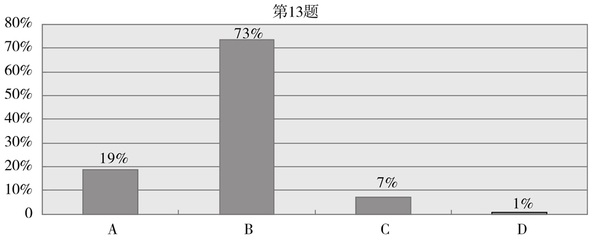
教师对学生学习的认知，即教师认为学生是怎么掌握数学广角的学习的，这一认识对教师的教学决策有重要的影响。从各选项统计结果看：73%的数学教师认为学生主要是经过探索、深刻理解、建立模型来掌握数学广角内容的；19%的数学教师认为学生主要是通过模仿和反复练习来掌握所学知识的；7%的数学教师认为学生是通过自我控制与调节，联系已有经验而掌握的。从所设选项看，A选项的内容主要体现了行为主义的学习观点，认为学习是机械的模仿、反复的强化，持此观念的数学教师在教学的设计中会非常重视讲授与练习，让学生达到一定的熟练程度；B选项体现数学教师对学生亲身经历和理解的重视，注重过程与结果；持C选项观念的数学教师一般会注重学生的原有认知水平，重视学生在学习一个新内容前已经获得的经验。统计数据结果显示：教师整体上认为学生的活动经验与学生已有经验是掌握新知识的基础。
14．通过您的观察，您认为学生学习数学广角时最大的困难是（ ）。
A．学生对所建模型的理解不透彻
B．学生智力发展水平的限制
C．与学生的已有经验无法连接
D．内容本身过难，但编排不够连续
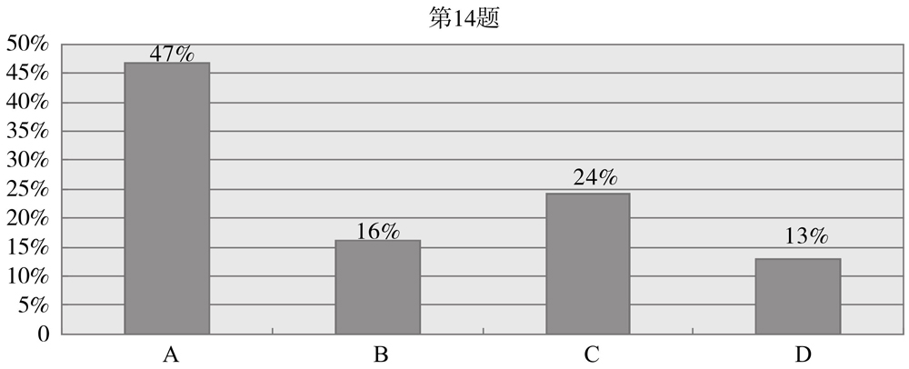
此题是对学生学习数学广角时遇到的困难的调查，但是用于教师调查，主要是了解教师对学生的认知，了解教师对学生学习困难的认知和掌握。从各项统计数据看：47%的数学教师认为学生学习时最大的困难是结论的总结，即对所建立的模型的理解不透彻，模型的理解直接决定着学生对所学知识的迁移、运用与记忆；24%的数学教师认为学生学习数学广角最大的困难是与自己已有的经验无法连接；13%的数学教师将其归因为数学广角本身的难度大；16%的数学教师认为主要是学生智力发展水平的限制，这类教师认为学生会随着生理的成熟而自然地学会解答这类题目。从统计的结果可以分析出：教师认为学生学习数学广角最大的困难是对模型的建立与理解不透彻，其次是学生与已有经验连接存在困难。
15．学生在学习这一内容后，您认为做题错误的原因是（ ）。
A．没有理解透彻，知识迁移困难
B．学生的思维水平达不到
C．建立模型和记忆有困难
D．题目灵活、学生的解题策略较少
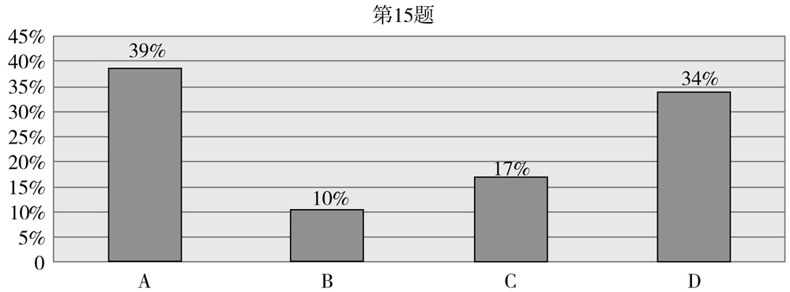
通过调查学生做题错误的原因，了解教师对学生学习结果存在问题的认知。从统计数据看：39%的数学教师认为学生的学习结果存在问题的主要原因是学生在学习时没有理解透彻，知识迁移困难；34%的数学教师认为数学广角题目灵活、学生解题的策略少导致学生做错；17%的数学教师认为学生建立模型和记忆有困难；10%的数学教师认为主要是因为学生的思维水平达不到。可以初步分析得出：教师对学生的学习结果不理想的认知比较全面深入；调查结果与平常的认识有差距，在平常的认识中，很多人会觉得是因为学生记不住结论，但是统计结果显示，数学教师们认为是因为学生没有在学习的过程中将方法理解透彻，所以不能灵活迁移。
26．在教学中，您知道学生是如何获得知识，建立数学模型的吗？（ ）
A．清楚，并运用
B．清楚，但是运用不好
C．有点不清楚
D．完全不清楚
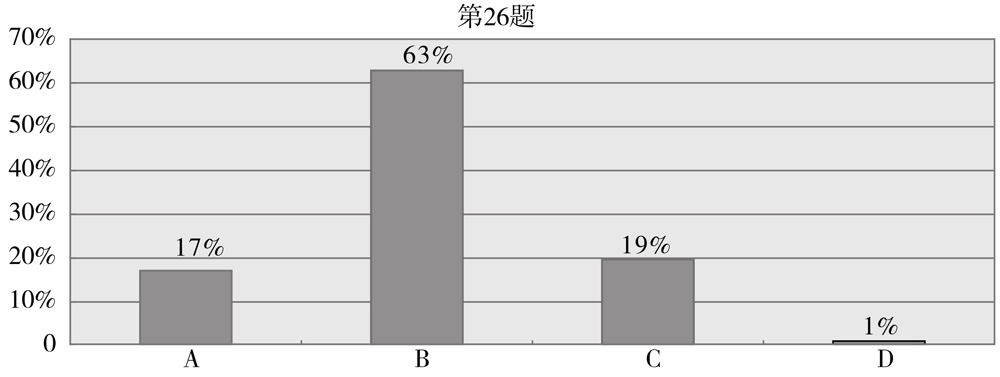
此题和该维度的第一题均是从侧面反映教师对学生认知情况的调查统计，前面的一题重在了解教师对学生认知的知识，这一题重在了解教师关于学生认知情况的认知，即教师关于自身对学生认知情况的态度。从选项的统计情况看：80%的数学教师都选择了清楚学生是怎么获取知识的，其中，17%的数学教师能够在清楚学生是怎么学习知识的同时，加以引导和运用，而63%的数学教师表示对学生认知知识不能灵活运用。20%的数学教师对学生的认知方面掌握有困难，对学生是怎么掌握知识的认识不清，反映出在关于学生是怎么学习的，学生是怎么掌握知识的方面，教师存在的问题较多。
27．您能否掌握不同学习阶段学生的认知水平？（ ）
A．完全能
B．基本能
C．偶尔能
D．几乎不能
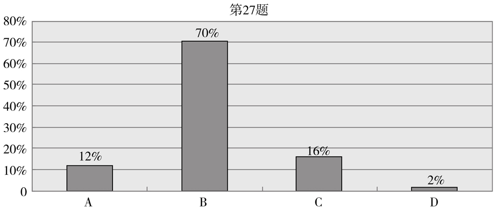
设置此题的目的是了解教师对学生的认知发展的认识的情况。从统计结果看：12%的数学教师能够完全掌握各个阶段学生的认知水平，70%的数学教师基本能够掌握学生各个阶段的认知水平，18%的数学教师关于学生认知水平的掌握较弱。这一统计结果与上一题的统计结果相吻合，体现出教师在学生的认知水平的认识方面有待提高。
28．您是否在数学广角教学中，一节课要完成的主要目标不超过两个，并且能够机智实施教学目标？（ ）
A．完全是
B．基本是
C．偶尔是
D．不是
这道题目问的是教师在目标制定方面的情况与课堂目标实施情况，可以直接反映出教师的目标制定与在课堂上的实施情况，但是这道题可以从侧面了解教师对学生心理的掌握，即反映教师的学生知识，教师对学生的认知。有研究显示，一节课的教学目标的制定不超过两个，是非常科学且符合学生心理特点的。从统计结果看：82%的数学教师在制定教学目标时都控制在两个以内，能够很好地处理教学目标在课堂上的实施情况，只有18%的数学教师在教学目标的数量方面会超过两个。这可以反映出大部分教师有根据学生的心理制定一节课的容量的意识，但不是每次都能做到。
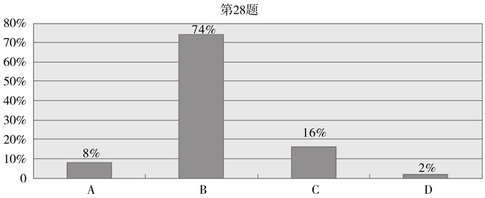
29．在数学广角教学中，您是否会对学生的学习方法、解题策略、自我监控与调节进行指导？（ ）
A．总是会
B．基本会
C．偶尔会
D．从不会
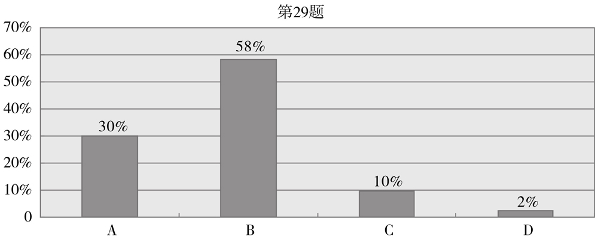
学生的学习方法、解题策略、自我监控与调节是一些与教学内容看上去没有直接联系的方面，但要想对学生进行有效的指导，就要求教师必须具备相关的知识与能力。本题从侧面了解了教师在学习方法、解题策略、自我监控与调节方面的知识情况。从统计的情况看：88%的数学教师都能够比较好地对学生进行这方面的指导；12%的数学教师对学生这方面的指导较弱。通过初步分析看出：大部分教师注重学习方法、解题策略、自我监控与调节的指导。
卡方检验发现，除了26题外，其余题目的P 值都大于0.05，因此在教师的学生认识力方面，4组教师之间在这些选项中没有显著差异。
主要结论：通过调查分析，对教师在数学广角教学中有关学生的认知的知识和对学生的认知情况有了初步的了解。从教师制定目标的情况看，大多数教师在多数时候，都能够在一节课完成两个教学目标，这符合小学生的认知特点。但是具体到对学生建模的认知的时候，教师们则认为主要通过探索与深刻理解建立模型，在教学中他们往往利用不好认知规律。关于学生学习困难的原因和做题错误的原因，教师则认为主要是学生在建立模型方面困难较大，因为没有理解而导致错误。可以说，教师在对学生认识和利用认知特点进行教学这方面有待提高，对学生学习方法、自我监控与调节方面的教育要加强。在教师教龄显著性差异方面，关于教师对学生获取知识方式方面存在显著差异，其余方面均不存在显著差异。
面谈资料和数据分析：
与教师A的面谈：
面谈者：老师，您觉得您对学生的认知特点了解多少？
教师A：我并没有特别地去对此进行区分，关于认知特点应该是以前在学习心理学的时候有些印象。现在主要是教书教久了，自然地就会知道学生在想什么，哪个方面的学习对学生来说是有困难的，学生哪里容易出错，容易出错的这些知识要怎么教学学生才会更容易懂。不过去了这个名师工作室后，倒是增加了一些理论上的知识。
面谈者：老师，按照您刚刚的意思，您加入名师工作室以后，再一次地接触到了关于学生认知的理论，您觉得对您的最大影响是什么？
教师A：这个当时对我的触动挺大的，因为有好多东西都是自己凭经验摸索出来的。来这以后，才发现原来很早就有人对此进行了研究总结，要是我能更早知道的话肯定效果要好，而且不会像刚刚做老师那样，非常不理解学生，总是充满抱怨，现在心态就轻松多了，对学生的各种表现都能够理解。
面谈者：按照您的说法，这个学习对您的教学影响挺大的。那老师您常常能够用这些知识来指导您的教学吗？尤其是数学广角本身就是重在思想方法的教学。
教师A：当然了，我的课一直在不断地尝试和改变，就是为了发现学生的特点，并希望利用这些知识帮助他们学习。可能自己在这方面悟性不够高，个人觉得这个过程挺漫长、挺反复的，尤其是在自认为挺好的时候，经过上课实践后发现学生还是茫然，还是挺有挫败感的。
面谈者：那老师您觉得在数学广角学习中学生存在的困难是什么？
教师A：数学广角与其他知识不一样，主要是要渗透一些数学思想方法，即使我引导探索，但是能够找到方法或者归纳出结论的学生依旧较少，最后还必须由我给大家说明，再去做题巩固。课结束后也不是所有学生都能够理解相关知识，一般有一多半的学生能够较好地理解，但还有一些学生不能很快地理解。我一般不强求，只要这些学生在课堂上认真参与就行。
面谈者：您一般怎么去处理那些学生难以理解的内容呢？
教师A：方法挺多的，有时候就先让学生思考，然后我讲，有时候可以打比方。
与教师B的面谈：
面谈者：老师，您觉得您对学生的认知特点了解多少？
教师B：对学生的认识，一开始主要是依靠自己教学经验的积累和与其他教师的交谈，最近几年开始听一些专家的课并查阅一些资料，开始有了一些理论基础，而且会去实践和证明。
面谈者：老师，请问学生的认知是怎样影响到教学的？
教师B：对学生越是了解，上课就越是从容不迫，这个时候自己不怕冷场也不怕等待，因为都是正常的，学生需要时间去反应。在教学很多内容的时候，在教学的最后会通过举例子、打比方的方式进行。比如说，在家里和家长玩游戏的时候，一起来拼图形，拼到多少个的时候，需要多少模型，最原始的办法就是数数，但是学会了这样的公式，这个问题就太简单了。就是通过这种联系，让孩子去感受，去联系生活。
面谈者：老师，您觉得在数学广角学习中学生存在的困难是什么？
教师B：对很多的思想方法，学生还是很难一下子去掌握的，大部分学生都是要通过多次的体验和经历去感受数学的魅力。渐渐地，学生即使自己想不出解决的方法，也都勇于去尝试。不过我国数学教育受到苏联的行为主义影响最深远，所以教学中多数时候重在刺激、强化学生对知识的熟练程度，让学生反复地去做练习，这样学生的基础知识是掌握好了，但是在数学思想的运用方面就会略有不足。而数学广角就给小学数学注入了“新鲜血液”，在数学思想方面非常有价值，但是我们不能天天弄这些高大上的东西，还是要扎实基础。也就是说，学生的困难还是在于思想方法方面，在这样的传统之下，我们有了扎实的基础，也要让学生的思维发展起来。
从教师A和教师B的访谈看出：教师对学生认知的知识主要来自自己长年的教学经验，在后来的培训中又增加了理论知识。他们的教学都是围绕学生的认知特点展开的，但是仍旧存在很多的困惑，主要还是从经验出发。
教师的自我成长意识是非常重要的。听专家讲座、看书学习、实践中检验理论都是增加对学生认识的方式，而对学生的认识给老师带来的是一种从容。不过在对学生的认知方面，教师更加需要成长，需要把经验和理论、实践和理论结合，相互作用，发挥最佳效果，以便更有效地指导教学，做了解学生的教师，多几分从容，少几分抱怨。
已有的研究清楚地证明，教师在教学前、教学中与教学后所做出的决策对学生的学习有决定性影响。教师做教学计划是按照教育研究者研究总结的四个步骤（明确目的、选择行动、组织行动和明确评价程序）还是按照时间做相应的年计划、学期计划、单元计划、周计划和日计划？在这些计划中，教师如何决定教什么？教到什么程度？如何来教？如何组织课堂教学？采用什么样的教学过程？怎么样使教学适应个别学生？教师在教学期间也会做很多的决策，比如，处理课堂生成、课堂纪律。教师在教学期间习惯性地根据已有的评价方式与学生的表现做决策。这部分内容，重在了解教师在数学广角教学中的决策。涉及这一维度的题目主要是1、16、17、18、19、20、21、22、23，具体分析如下：
1．您是否注重把数学广角的教学与其他教学内容相联系，加强理解、记忆，减少学生的遗忘？（ ）
A．非常注重
B．很注重
C．偶尔注重
D．几乎不注重
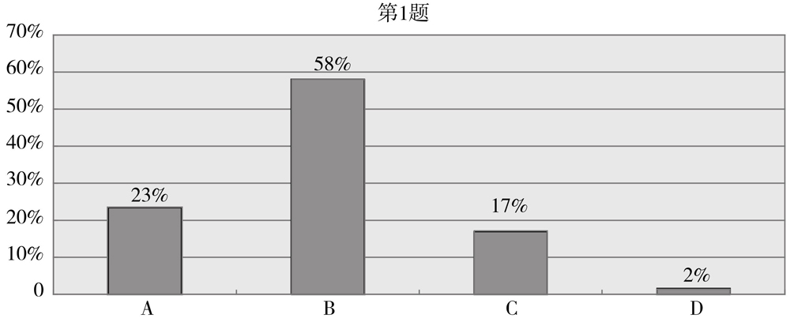
由于数学广角是单独的教学单元（从二年级开始，每册书的最后一个单元），故它的这一编排特点相对来说更容易被学生遗忘，但是教师在教授其他内容或者遇到相同情境时，如果注重数学广角与其他知识的联系与迁移，就会增加学生的记忆。从数据收集情况看：81%的数学教师在教学中很注重数学广角的数学内容与其他数学知识的联系，19%的数学教师不太注重与其他数学知识的联系。从这个统计可以初步得到：大部分教师在教学中都非常重视前后知识的联系，这在很大程度上影响了教师的教学决策。
16．您是否会花费时间做年计划、学期计划、单元计划甚至是周计划和日计划？（ ）
A．会做计划，按计划执行
B．做一些，但没完全按计划执行
C．在心里计划就好，因为计划赶不上变化
D．从不计划，按照教学时间来
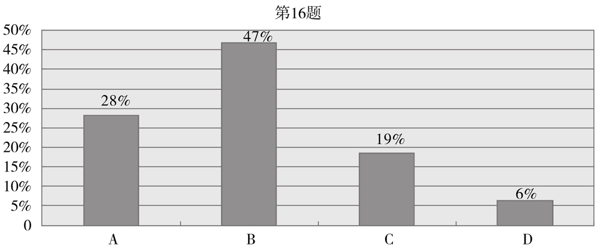
教学计划是教师决策的一大部分，这里只能了解教师做计划的情况，而不能够了解教师是怎么做计划的。从统计数据看：28%的数学教师会做计划且按计划执行；47%的数学教师做计划，但是没完全按计划执行；25%的数学教师不做计划，其中19%的数学教师认为教学中变动较多，计划往往赶不上变化；6%的数学教师认为，按学校的教学时间安排教学即可，不需要做计划。从以上统计可以初步分析出：能够做计划并按计划执行的教师并不多，大多数教师都是做好了计划，但是不能完全按计划执行，还有部分教师认为计划不重要。
17．您完成一个数学广角内容的教学一般用几个课时？（ ）
A．1～2个课时
B．3～4个课时
C．5～6个课时
D．更多
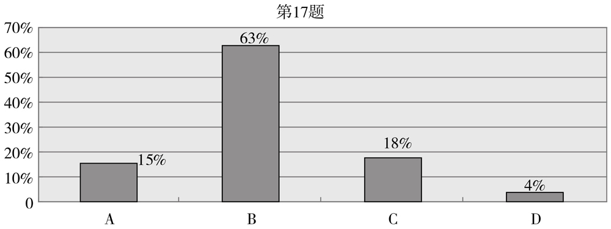
每一册书的数学广角，编排的例题一般是2～4个，按教学参考书的建议，一般是4个课时。从统计结果看：63%的数学教师安排3～4个课时；15%的数学教师安排1～2个课时；18%的数学教师安排5～6个课时；4%的数学教师安排更多的课时。安排课时的多少虽不能够反映教师教学的好坏，但是能够从侧面反映出教师对数学广角的重视程度与决策的合理性。从数学广角本身的内容出发，数学广角不仅涉及的内容广、思维含量大，而且需要学生达到积累数学活动经验和掌握相关知识的目的，安排4个课时教学也都比较紧凑。从统计数据反映出：有小部分教师不太重视数学广角的教学，安排课时过少。
18．您一般是怎么决定教什么、怎么教以及如何组织教学的？（ ）
A．网络查找和看教学视频
B．按照教材和学生特点以及自己的教学风格
C．根据考试内容选取
D．没有思考过，按照教参建议
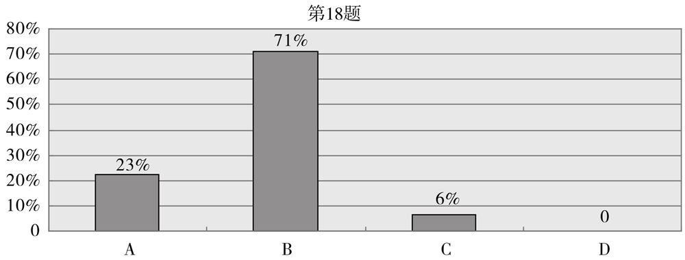
教师的教学观念、教学理念是影响这一决策的深层因素。本题通过了解什么决定教师教什么、怎么教和如何组织教学，来反映影响教师做决策的一部分因素。从以上的统计数据可以看到：71%的数学教师选择按照教材和学生特点以及自己的教学风格来决定；23%的数学教师选择通过网络查找和看教学视频来帮助自己决策；6%的数学教师根据考试的内容决定教什么、怎么教。此统计可以初步反映出：教师在做这一重要决策时，主要还是扎根书本、学生和自身的情况，有部分教师注重利用网络资料，仅有少数教师是根据考试要求选取教学的。在收集本题数据的过程中出现了多选情况：有6名教师多选，其中两名选择了A、B、C3个选项，有3名选择了B选项和C选项，有1名选择了A选项和B选项，从多选的情况也可以初步反映出教师在做这一决策时一般会考虑多个因素，但是最主要的还是通过借鉴别人、根据自身情况来做出决策。
19．在教学中，您一般采用的评价方式是（ ）。
A．考试成绩
B．制作学生成长记录袋，综合评价
C．上课发言和作业完成情况
D．很少评价
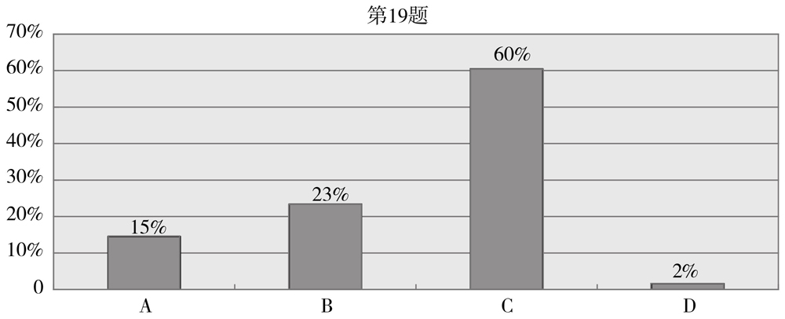
俗话说，教师重视什么，学生就会什么。这里的重视可以简单概括为评价，即教师评价的导向直接影响了学生的学习结果。在这一题中也出现了多选的情况，从多选情况看，教师一般会以考试的成绩、上课发言、作业完成作为评价学生的主要依据。通过统计数据看出：在教师的主要评价依据中，60%的数学教师是通过上课发言和作业完成情况来进行评价的，23%的数学教师运用成长记录袋评价学生，15%的数学教师通过考试成绩评价学生，2%的数学教师很少评价学生。从统计数据初步看出：大部分教师的评价都注重过程，同时会与结果相结合，仅有小部分教师的评价依据是考试成绩。
20．上完课，您能否根据学生的学习情况有效地布置数学作业？（ ）
A．完全可以
B．大部分时间可以
C．不可以，要通过考试才可以掌握学习情况
D．不可以，作业会按照练习册顺序布置
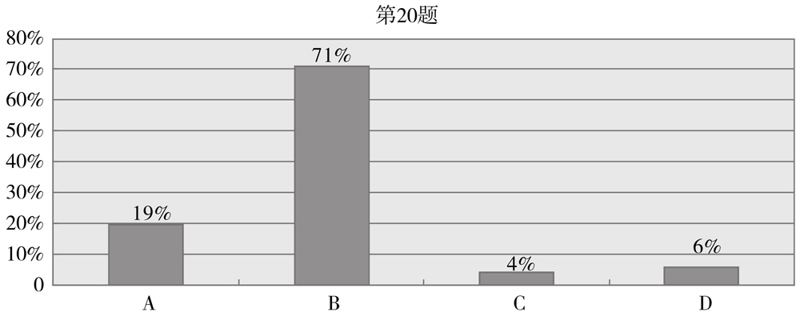
题目中问的是，是否可以根据学生的学习情况有效地布置数学作业，即能否根据学生的学习情况布置适合的练习，不至于题目过于简单、重复或者是过难。在实际教学中，实现此要求是比较困难的，但是也有教师会以给学生发学习单、勾画一些题目等方式尽量地保障练习的有效性。从数据收集统计的情况看：19%的数学教师能够非常好地做到布置作业的有效性，71%的数学教师布置的大部分作业可以做到有效，10%的数学教师在有效布置作业方面存在问题，6%的数学教师直接按照学生的练习册按顺序布置。统计结果可以初步表明：在布置作业方面，大多数教师布置的作业情况较好，只有小部分教师布置作业的情况需要改进。
21．在备课时对一些重点、难点、疑点问题，您认为怎么设计最有效？（ ）
A．把握节奏、层层推进
B．搭支架
C．设置问题、让学生探讨
D．根据教学参考书的建议进行设计
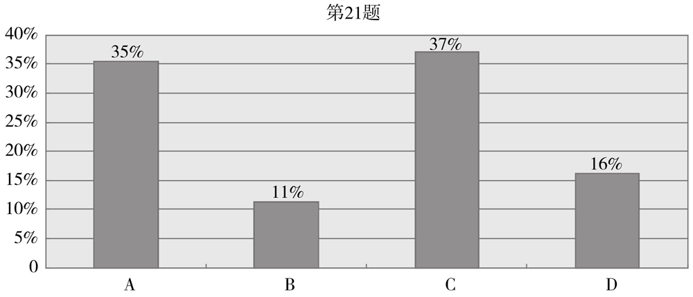
突破教学的重点、难点和疑点，无疑考验着教师对学生的了解程度和处理教学内容的水平。从选项的设置看：把握节奏、层层推进，是以教师讲授为主的选项设计；搭支架，即教师有意识地为学生铺垫学习的前提知识，逐步地达到教学目的；设置问题、让学生探讨，重在让学生自己探索与思考。统计数据显示：37%的数学教师认为设置问题、让学生探讨，会有更好的教学效果，35%的数学教师选择“把握节奏、层层推进”，16%的数学教师按照教学参考书的建议进行设计，11%的教师选择了搭支架。初步看出：教师在看待怎么突破重难点的问题上，各有各的想法，即在教学中方法可能会很多样，但是有小部分教师的设计可能会比较机械。
22．您在上课的过程中，能否把多媒体、板书、动作示范、举例等配合起来，帮助学生理解？（ ）
A．完全能
B．基本能
C．偶尔能
D．几乎不能
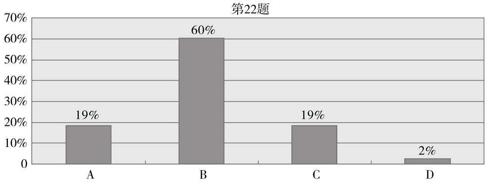
这是一个关于教师如何运用教学辅助手段的问题，即教师运用的教学手段是否有效。从各位教师的选择结果看：60%的数学教师认为自己选用的多媒体、设计的板书基本有效，能帮助学生学习；19%的数学教师认为他们在选用教学媒体上的表现非常好，都能够有效地帮助学生理解；21%的数学教师在选用教学辅助手段方面不是非常有效，有待提高。从统计数据初步看出：教师在选用教学辅助手段上需要进一步提高。
23．您是否会根据教学需要选取和组织一些书本以外的材料，或者更换课本提供的情景？（ ）
A．总是会
B．常常思考，灵活选择
C．偶尔会
D．从不会，照本宣科
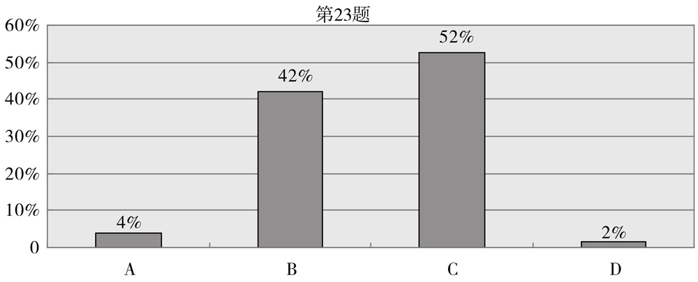
本题可以在一定程度上反映出教师对教材思考、对学生学习材料的补充情况。从统计的结果看：52%的数学教师偶尔会选用其他材料；42%的数学教师常常思考并做灵活选择；4%的数学教师总是会根据教学的需要补充材料；2%的数学教师照本宣科。从统计数据初步看出：大部分教师会为了教学的需要增加教学资料或者更换教材；少部分教师这方面的意识比较弱，教科书是其全部教学材料。
通过卡方检验对各题进行检验，调查不同教龄的教师在不同题目上是否存在显著差异。
卡方检验的P 值中，17和18题的比0.05小，即在不同教龄组间存在显著差异；其余的题目中，P 值都大于0.05，即在不同教龄之间不存在显著差异。
总的来看，通过对以上问题的分析，在教学策略上，超过60%的教师根据学生的特点和自己的教学风格进行教学，适当地更换教材提供的素材，有策略地运用多媒体、黑板等。对教学中的难点，大部分数学教师偏向于采用讲授和发问的方式。在学习评价上，以上课发言和作业完成为主。可以看出，大部分数学教师都按照学生的特点和自身情况做出教学决策。但是从前面的调查也可以知道，数学教师这方面的相关认知主要来自自己的经验和主观的判断。大部分数学教师能根据教学选用教材和多媒体等，在评价方式上更加注重过程，不过在教学计划方面很少有教师能够制订合理计划并执行。在教师教龄方面，教师教学进度和教师组织教学方面存在显著差异。
面谈资料和数据分析：
与教师A的面谈：
面谈者：您觉得在教授“问题解决”和教授数学广角时，最大的区别是什么？
教师A：“问题解决”主要考查的是解题的策略和解题的模式，比如路程＝速度×时间，而数学广角更注重思想活动的过程。
面谈者：在数学广角教学中，您怎么兼顾所有的学生呢？
教师A：这是个难题，很难做到，我主要采用小组合作的方式，让学会的学生教尚未学会的学生，让学生代替教师的角色再来一次，而且在备课的时候，所选知识的起点是以中等或中等偏下的学生为标准的。
面谈者：老师，您选取知识的起点是以中等或中下等的学生为标准的，那么在布置作业上，您会通过个性化作业来兼顾优秀的学生吗？
教师A：这个做不到，太难了，布置作业大家都是统一的。
面谈者：一般上了新课之后都会有一些练习课，您觉得这个部分的练习与其他内容的练习有什么不同？
教师A：平时的练习课一般都是复习一下知识点或者是解应用题的模式，而数学广角一般采用化繁为简的方式，先讲些简单的，做好铺垫后，再让学生去做题。
面谈者：老师，您班上的学生中，在外面上培训班的多吗？那些培训对学生学习数学广角的影响是怎样的呢？
教师A：据我所知，在外面上培训班的不是很多，部分优秀的孩子是可以迁移运用相关知识的，不过多数孩子是做不到的。
面谈者：老师，您在数学广角的学习中采用小组合作的效果怎么样？
教师A：在实际的教学中，用小组合作无法保证教学的效率和质量，很难操作，有的学生会借机去玩。
与教师B的面谈：
面谈者：老师，您觉得在教授“问题解决”和教授数学广角时，最大的区别是什么？
教师B：小学数学一直给个人的印象就是四则运算，应用题也是四则运算的运用，数学广角就不同了，它的编入拓展了学生对数学的认识，增加了学生对数学的兴趣，数学广角的教学更加重视体验和体悟过程，以及对数学思想方法的渗透，所以这两者在目标上本身就不同。
面谈者：老师，在数学广角教学中，您怎么兼顾所有的学生呢？
教师B：学生之间的个体差异性很大，在这几十年的教学中，我总感觉小学阶段，女孩子在学习数学上是非常有天赋的，每一届掌握最快的总是女孩子，男孩子可能要慢一点，因此我一般会在教学目标上做到兼顾，在提问方面来兼顾，对学得慢的学生和学不会的学生我依旧会很乐观，我不会去批评他们，而是去鼓励他们，期待他们下一次做得更好。每个人的成长速度不同，我不去强迫所有的学生都一样，只要每个人都有所收获就好。
面谈者：老师，您怎么看待学生的学习结果？主要通过什么方式评价学生的学习？
教师B：刚刚我们也说到，在每一次期末考试中，我带的学生考不过我们年级的好多老师带的学生，很多时候是因为我没有把期末那一个月的时间都用在反复的练习上，那种机械的记忆比不了思维的发展，我不是很看重，我觉得那会磨灭学生的兴趣，但是我的学生在做比较灵活的题目上比较有优势，从小升初考试中就可以看出来，他们的方程思维等都发展得特别好，到初高中去学习更加有优势。对学生的评价，我喜欢我的每一个学生，所以他们身上的闪光点我都会去放大，我期待他们的每一次进步，我也特别希望我的每一次课都能让他们有收获。
在教师的教学策略方面，从以上的访谈可以看出，这两位教师对数学广角的教学有自己的思考，在不断地尝试新的方法，而且他们采用的评价方式取决于他们对学生的认识和教学的态度（观念），很人性化。教师A在课堂中运用小组合作时发现：常态课中，小组合作很难保证教学效率，故小组合作并非适合每一个班级的学情，而对小组合作本身的理解也成为采用小组合作教学的限制条件。在对研究者的了解中，有不少教师对小组合作的认识仅停留在看着公开课上的老师怎么做，需要的时候自己也模仿着做这个层面。所以在课改中对很多教学方法、很多常常提及的名词，多数教师仍旧停留在感性认识阶段，但是真正用到教学中却无法发挥它们的功效。
学生学习数学广角时的态度，学习过程中存在的困难，学生在学习数学广角之后的收获等情况是教学情况的重要体现。这一小节主要从学生学习数学广角时的特点和态度，学生学习数学广角后的结果和学生对教师教学的认识这几个方面进行说明，其目的是了解学生学习的情况，从而反映教学的状况。
学生学习特点这一维度，由五个因子构成，分别是学生的迁移特征、提问意识、主动运用思维策略、偏好的学习方式、易于接受的教学方式。问卷中涉及学生学习数学广角的学习特征的题目是1、2、3、4、5。通过SPSS19.0处理，情况如下：
从表5.1可以看出，题1到题3方差检验的相伴概率均大于显著性水平0.05。由此可知，不同年级学生在学习特点方面没有显著差异。
表5.1 不同年级学生学习特点的单因素方差分析
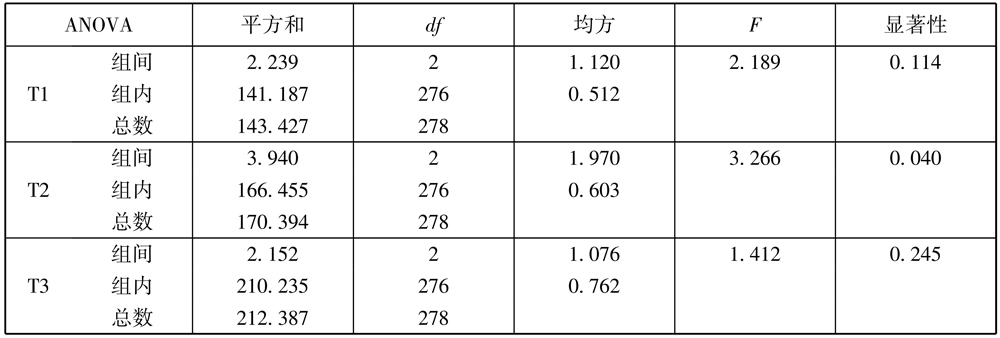
由表5.2可知，题1到题3的均值都在3以上，表示学生在这几个方面的情况都比较集中，且年级间没有显著差异。
表5.2 学生学习特点统计量
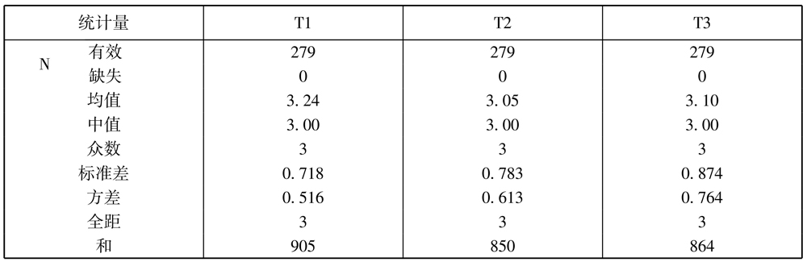
注：以下未标注的图表中的A、B、C、D分别表示经常、有时、极少和从不。
由表5.3可以看出，关于在学习中能否将新学知识与已经学习过的知识联系的情况，37.6%的学生经常将新旧知识联系起来；52.4%的学生有时会将其联系起来；6.8%的学生极少联系；3.2%的学生从不联系。由此可以看出，约40%的学生经常可以知识迁移，约50%的学生偶尔可以知识迁移，约10%的学生几乎不会知识迁移。从而说明，学生在知识迁移方面的整体情况较一般。
表5.3 学生知识迁移情况的描述统计
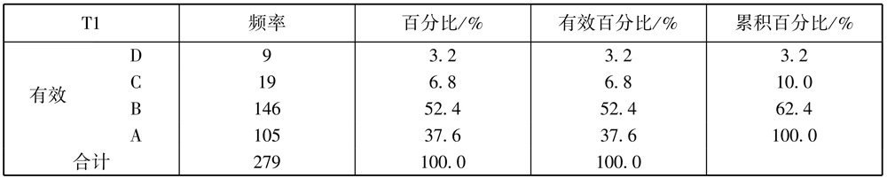
这个题与教师问卷第29题相互呼应，此题的目的是了解学生学习数学广角时提出问题的能力，题29是了解教师在教学数学广角时引导学生提出数学问题的情况。从表5.4可以看出，28.0%的学生经常提出数学问题；53.7%的学生偶尔提出数学问题；13.3%的学生极少提出数学问题；5%的学生从来没有提出过数学问题。由此可以看出，在提出数学问题方面，约30%的学生经常提出数学问题，约50%的学生有时可以提出数学问题，约20%的学生几乎不能提出数学问题。此题可反映出：学生在提出数学问题方面的能力一般。
表5.4 学生提出数学问题情况的描述统计
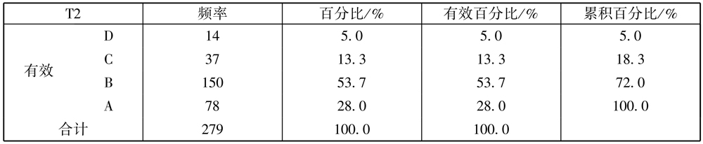
由表5.5可以看出，在主动运用猜想、推测、归纳等思维策略的情况方面，37.3%的学生经常运用；42.2%的学生有时候运用；15.4%的学生极少运用；6.1%的学生从不运用。从统计结果看：约40%的学生经常运用思维策略，40%的学生有时会运用思维策略，约20%的学生几乎不用。由此可以看出，学生在运用数学思维策略方面的能力一般。
表5.5 学生运用思维策略情况描述统计
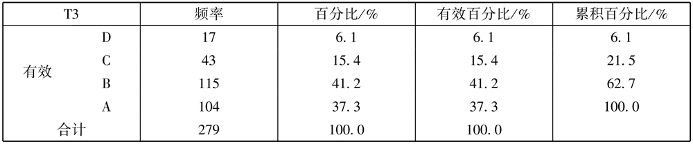
由图5.1可以看出，大部分学生喜欢教师讲典型例题、然后做题的教学方式，其次喜欢教师直观的教具演示、操作、归纳的教学方式。由此可以看出，学生还是习惯于教师的讲授。
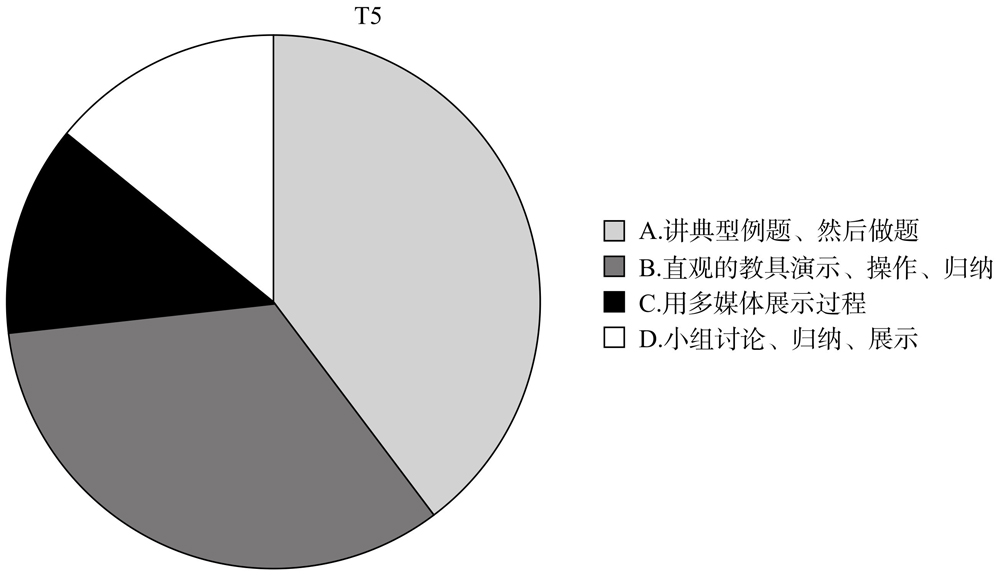
图5.1 学生易于接受的教学方式
从图5.2可以看出，学生易于接受的教学方式与偏好的学习方式是相互对应的。喜欢教师讲授典型习题、然后做练习的人数最多，说明大多数学生还是喜欢教师讲授，然后自己做题加深理解。
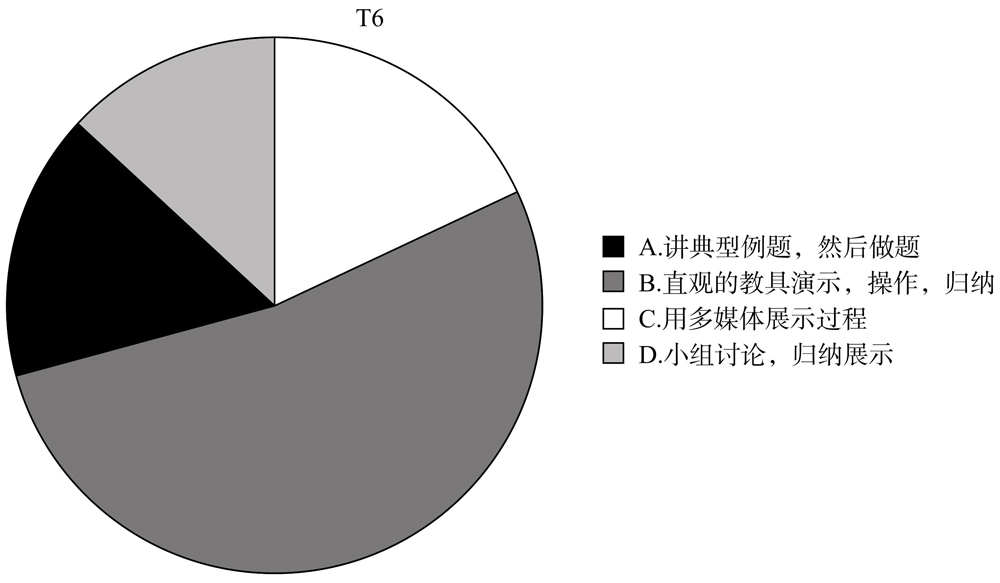
图5.2 对数学问题认识的调查
综上所述，可以得出不同年级学生在数学广角中的学习特点没有显著差异；学生在知识迁移、提出数学问题、运用数学思维策略方面的能力较一般；学生在学习中更喜欢教师讲授。此外，喜欢自己探究、发现、归纳的学生也有一定比例。
这一维度主要包括学生对数学的态度、数学广角学习的态度与自我认知三个方面。题目涉及第6题到第16题，由于有4个题目的选项不具有层次性，因此以描述统计为主。在一些不可以用的分析方法中剔除了相关题目。
从表5.6可以看出，7～16题（不包括题10、题14、题15）是为了了解学生学习数学广角的态度，其中，题8和题11的相伴概率分别为0.011、0.035，相伴概率低于显著水平0.05，由此可知题8和题11在不同年级间存在显著差异，其余题目的相伴概率均大于0.05，因此都不存在年级间的显著差异。显著差异情况具体分析如表5.7所示。
表5.6 不同年级学生学习态度的单因素方差分析
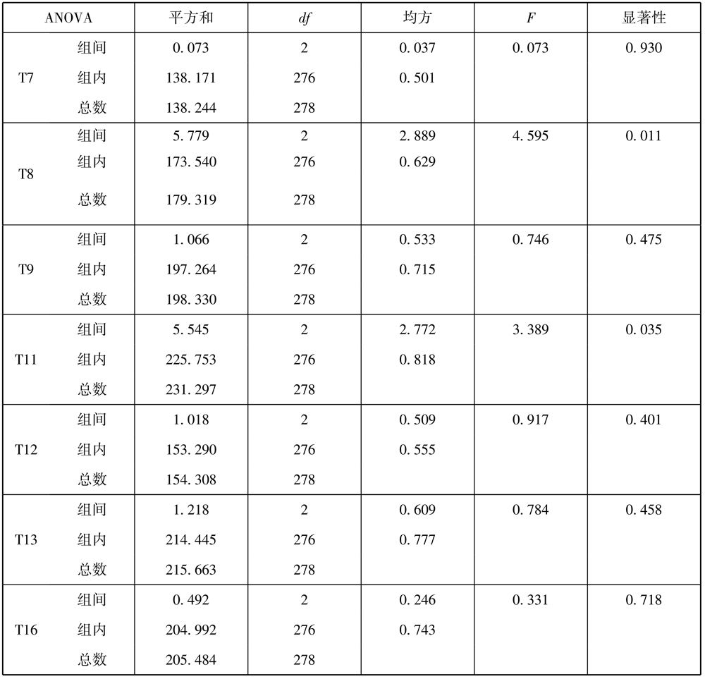
表5.7 学生数学广角学习态度统计量
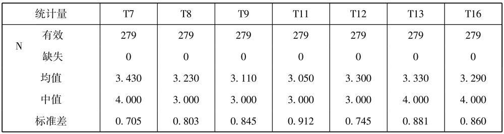
由表5.7可知，题7到题16（不包括题10、题14、题15）的均值都在3以上，表示学生在这几个方面的情况较集中。
从图5.3可以看出，在大部分学生的观念里，数学问题经常是只有一个答案，其次是总是只有一个答案；少数学生认为数学问题会有很多答案。这可以说明大部分学生关于数学广角的态度比较中庸。
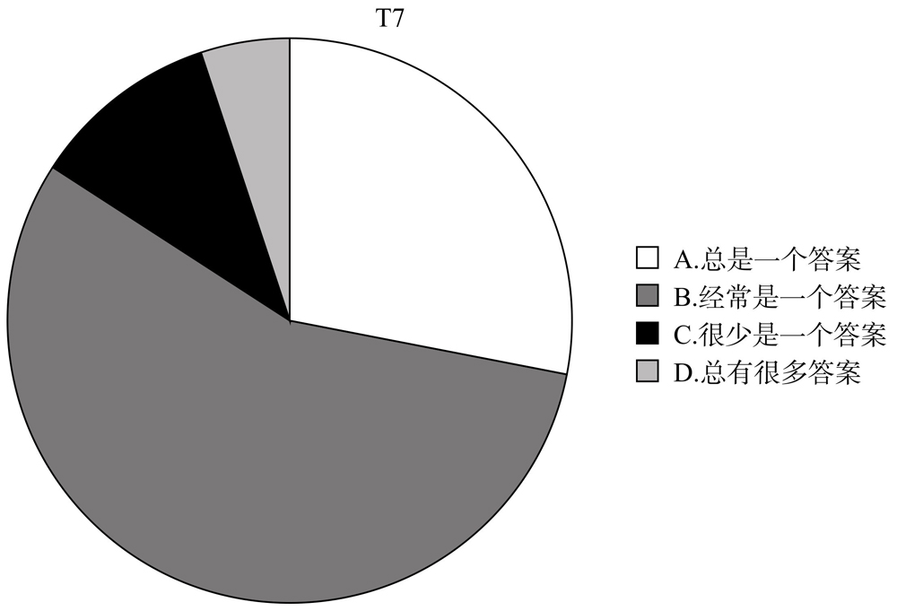
图5.3 学生学习数学广角之后的收获
从表5.8可以看出，54.5%的学生对数学非常感兴趣；34.4%的学生对数学比较感兴趣；10.4%的学生对数学不太感兴趣。由此可以看出，近一半的学生对数学非常感兴趣，约30%的学生对数学比较感兴趣，约10%多的学生对数学不感兴趣。
表5.8 对数学兴趣的描述统计
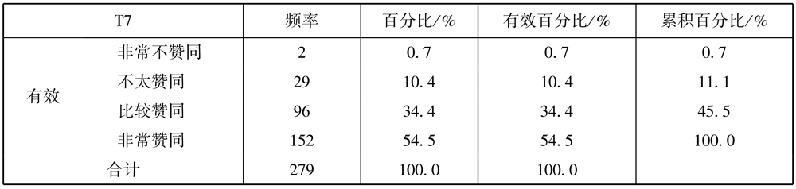
从表5.9可以看出，关于数学问题解决的方法，43.0%的学生认为数学问题解决一般都只有一个方法，而且常常用教师经常演示的方法；40.2%的学生认为有时候是有时候不是。由此可以看出，在解决数学问题的时候，大部分学生解决问题的方法较少，并且常常用老师经常演示的方法。
表5.9 对数学问题解决方法的态度的描述统计
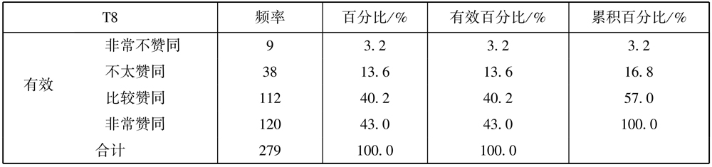
从表5.10可以看出，35.8%的学生非常喜欢数学广角；45.9%的学生比较喜欢；12.2%的学生不太喜欢；6.1%的学生非常不喜欢，喜欢数学广角的学生的比例明显比喜欢数学的学生的比例小。即只有约30%的学生非常喜欢数学广角，且有约20%的学生不喜欢数学广角。
表5.10 数学广角兴趣的描述统计
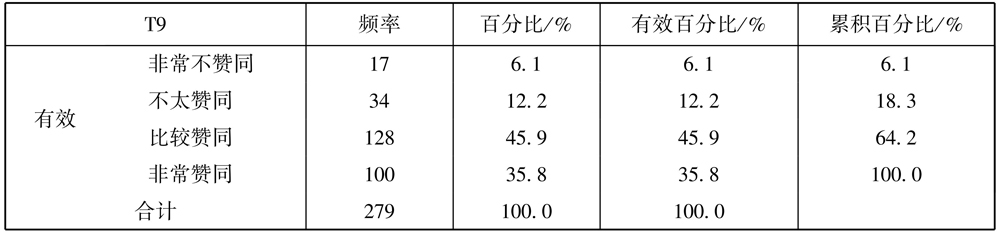
从图5.3可以看出，首先，面积最大的部分表示的是学生认为他们在学习了数学广角之后的最大收获是增长了知识，发散了思维；其次，学生认为他们的最大收获是增加了对数学的兴趣；再次，能够做一些较难的奥数题；最后，打击了学习的信心。由此可以说明，大部分学生认为数学广角的学习有助于他们思考问题和增长知识；只有少数学生认为数学广角的学习能够帮助他们解奥数题；有少数学生认为数学广角的学习打击他们学习数学的信心。
由表5.11可以看出，36.9%的学生非常同意数学广角的学习，他们认为只要能够记住公式并且可以运用就可以；38.4%的学生比较同意；17.5%的学生不太赞同；7.2%的学生非常不赞同。
表5.11 对数学广角学习目的描述统计
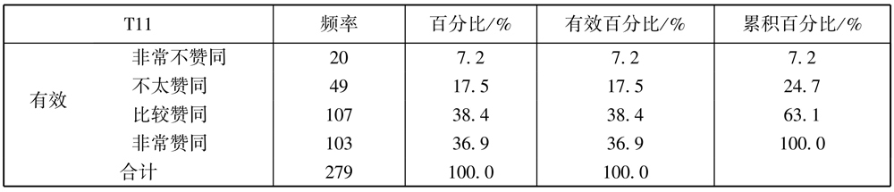
由表5.12可以看出，44.4%的学生能够非常顺畅地把数学知识用于生活；43.3%的学生能够比较顺畅地将数学知识用于生活；9.7%的学生不太能够顺畅地把数学知识用于生活；2.5%的学生不能够将数学知识用于生活。由此可以看出，有近一半的学生能够将学习的数学知识很好地用在生活中，约10%的学生很少能够将所学习的数学用于生活，约40%的学生有时会将所学的数学知识用于生活。
表5.12 在生活中运用数学态度的描述统计
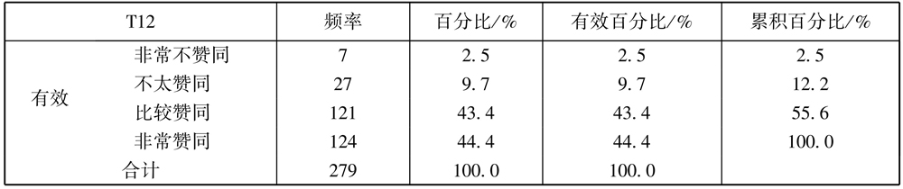
通过了解学生是否认为只要通过努力就能够学好数学，达到了解学生在数学上，关于归因态度的学习结果情况，即学生是成长式思维或者僵固思维，学生在数学学习上对成功与失败可能存在的归因倾向。由表5.13可以看出，55.2%的学生非常赞同只要通过努力就可以学好数学的观点；28.0%的学生对此比较同意；11.5%的学生对此不太同意；5.4%的学生对此非常不同意。由此可以看出，有一半以上的学生把学好数学归因于努力，即学生在学习数学的过程中面对失败的时候会归因于努力不够，而且他们更有可能养成的是成长式思维模式，即只要通过努力，自己数学方面的能力就会不断成长。近20%的学生会将能学习好数学归因于其他原因。
表5.13 对学生能够学习好数学的归因的描述统计
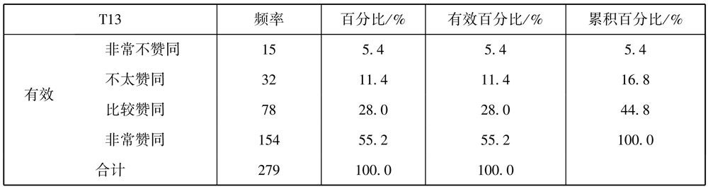
从图5.4中可以看出，四个颜色所占面积相差不大，说明学生在数学广角的学习中，学习困难的因素较多，而且各因素存在困难的学生分布相对均匀，其中不能理解归纳出公式或者结论过程的人略多，在记忆公式、选用公式、听懂了不会用这三个因素上人数分布相差不大。由此可以看出，学生对数学广角教学中推理、归纳的过程，以及公式的理解，灵活运用公式（迁移）等方面存在较大困难。
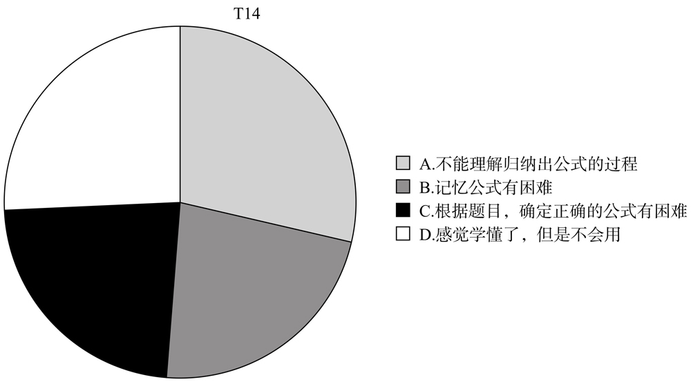
图5.4 学生学习数学广角时存在的最大困难
图5.5反映了学生学习数学广角时存在的最大困难，这些困难也是造成学生自己去解题时会出现错误的根本原因，因此从图5.5中可以看出，大部分学生解题出错是因为对公式理解不透彻、记忆不牢；其次为选择题目太难；“老师没讲到”这个选项的选择人数最少。这可以说明导致学生出错与学生学习困难的原因是一致的，对公式或者结论不能很好掌握和灵活选用是学生解题时存在的最大原因，而不太重视这块内容也是一个因素。
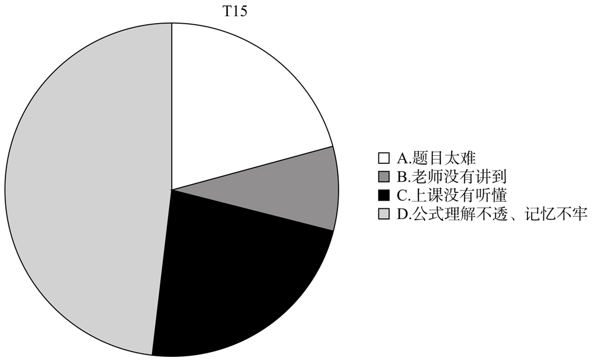
图5.5 学生在学习数学广角后做题出错的归因
由表5.14可以看出，51.3%的学生在课堂上发言非常积极，有想法就表达；30.8%的学生在课堂上对有想法就发言的举动比较赞同；13.6%的学生对此不太赞同；4.3%的学生对此非常不赞同。由此可以看出，大部分学生在课堂发言方面非常积极，近20%的学生在课堂上很少发言。
表5.14 学生课堂发言的态度的描述统计
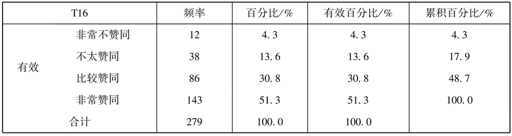
通过以上分析可以看出，在数学广角学习态度方面，学生对数学广角没有特别感兴趣，甚至低于对常规数学的兴趣；多数学生认为数学只有一个答案、只有一种解法；学生在学习数学广角自我认知方面，将学习结果主要归因于努力；学生在理解原理、公式、结论和灵活运用上比较困难，也不太重视该内容。
影响数学广角学习结果这一维度的因素主要有四个，即学生数学思维方法、知识掌握、知识与技能掌握和灵活运用思想方法的情况。主要涉及的题目是17～25题。通过SPSS19.0的处理，17～25题的相伴概率都大于0.05，由此可知在不同年级间不存在显著差异。
由表5.15可知，在17～25题的均值中，除了17题的均值为2.28外，其余的都在3以上，这表示学生在这几个方面的能力整体较好。
表5.15 学生数学广角学习结果统计量
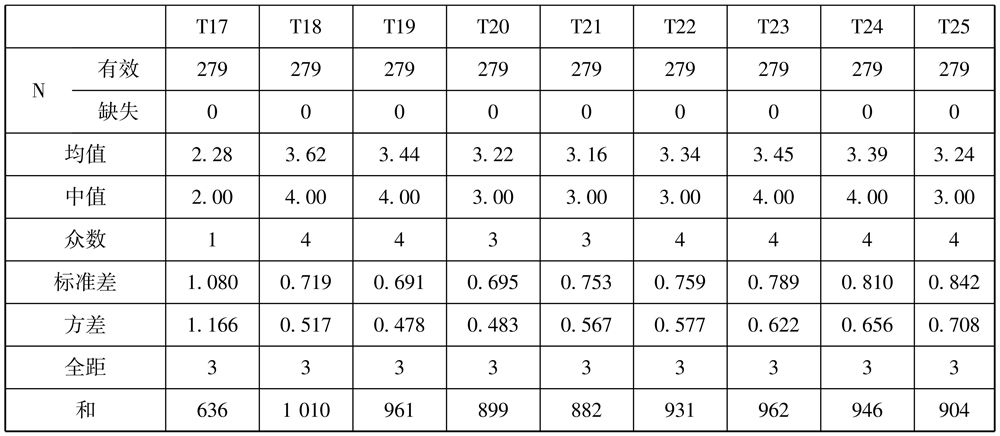
由表5.16可以看出，对于学生在读题的时候只用读一遍就开始做题这个问题，17.9%的学生非常赞同；22.2%的学生比较赞同；29.7%的学生不太赞同；30.1%非常不赞同。由此可以看出在读题上，近30%的学生通常不止读一遍题目才开始做题，近50%的学生有时读一遍题目就开始做题，近20%的学生读一遍题目就开始做题，说明学生读题的能力一般。
表5.16 学生读题目的技能的描述统计
由表5.17可以看出，73.1%的学生非常赞同遇到不会解的题目时去思考，寻找能够解决的方法这一做法；18.6%的学生比较赞同此种做法；5.4%的学生对此不太赞同；2.9%的学生对此非常不赞同。由此可以看出，约70%的学生遇到难题的态度是寻找方法，另外有20%多的学生可能会根据情况进行处理，仅有2.9%的学生会直接放弃。这说明大部分学生对待难题的态度较好。
表5.17 遇到难题时学生做法的描述统计
由表5.18可以看出，53.8%的学生非常清楚地知道一节数学广角中教师教学的重点；39.1%的学生比较清楚地知道一节数学广角课中教师教学的重点；5%的学生不太能分清楚一节课的重点；2.2%的学生分清楚一节课的重点。由此可以看出，超过50%的学生能够清楚教师的教学重点，约40%的学生几乎可以明白教师的教学重点，只有约10%的学生不明白教师的教学重点。
表5.18 能否明白教师教学重点的描述统计
由表5.19可以看出，35.8%的学生在学习完数学广角的内容之后，除了学到了知识，还了解到了一些数学思想方法，比如说归纳法、作图法等；52.4%的学生对此比较赞同；10%的学生对此不太赞同；1.8%的学生对此非常不赞同。由此可以看出，有超于30%的学生认为他们在上完一节数学广角课时能够了解到一些数学思想方法，约50%的学生偶尔能够了解一些数学思想方法，约10%的学生没有了解到数学思想方法。这说明在数学广角教学中，思想方法渗透方面的效果比较一般。
表5.19 在学习结果数学思想方法方面的描述统计
由表5.20可以看出，34.8%的学生在学习了数学广角的内容之后几乎能够掌握教师教的所有内容；49.4%的学生能够掌握大部分知识；12.9%的学生只能够掌握小部分知识；2.9%的学生几乎不能够掌握相关知识。由此可以看出，30%左右的学生能够掌握全部内容，50%左右的学生能够掌握大部分内容，10%左右的学生只能够掌握一小部分内容，3%左右的学生几乎不能够掌握相关知识。这说明在数学广角知识掌握上，有部分学生存在很大问题。
表5.20 学生在知识掌握方面的描述统计
由表5.21可以看出，48.4%的学生学习数学广角之后能够掌握公式、结论和概念；39.8%的学生对此比较赞同；8.9%的学生对此不太赞同；2.9%的学生对此非常不赞同。由此可以看出，一半以上的学生能够较好地掌握公式、结论和概念，但是有10%左右的学生在掌握此部分知识时存在较大问题。
表5.21 学生对公式和结论掌握情况的描述统计
由表5.22可以看出，60.6%的学生在学习数学广角的过程中运用了画图、做笔记、实物演示等方式来进行理解和记忆；26.5%的学生对此比较赞同；10.0%的学生对此不太赞同；2.9%的学生对此非常不赞同。由此可以看出，超过60%的学生能够很好地运用画图、做笔记、实物演示等学习策略进行数学广角的学习，约10%的学生在运用相关方法时有困难。
表5.22 学生学习策略的情况描述统计
从表5.23可以看出，55.6%的学生对学习数学广角有助于了解更多的数学思想方法这一观点非常赞同，并且他们逐渐培养了找规律和通过画图解决问题的意识；32.2%的学生对此比较赞同；7.9%的学生对此不太赞同；4.3%的学生对此非常不赞同。由此可以看出，有一半以上的学生认为学习数学广角逐渐培养了自己找规律和通过画图解决问题的意识，但是有多于10%的学生认为自己学习数学广角后没有去找规律、归纳和通过画图解决问题的意识。
表5.23 关于数学思想方法的描述统计
由表5.24可以看出，45.5%的学生在学习数学广角的内容后能够把新学的知识、方法运用到新的情景中去；37.6%的学生对此比较赞同；12.2%的学生对此不太赞同；4.7%的学生对此非常不赞同。由此可以看出，有近一半的学生对所学的新知识、新方法的运用较好，有多于10%的学生在知识的迁移运用中存在困难。
表5.24 关于运用所学知识情况的描述统计
综上所述，在数学广角学习结果方面，大部分学生有较好的解题习惯，能够认真读题，遇到困难的题目总是会尝试自己解决，且在上完一节课后能够清楚教师教学的重点。在数学思想方法方面，一半左右的学生认为学习数学广角帮助自己培养了找规律、归纳、类比、迁移等思维方法，掌握了作图、做笔记、实物操作等解决问题的策略。在知识掌握方面，一半左右的学生认为自己能够掌握好公式、结论和概念并且能够将其迁移到新的情境中去。但是总有10%左右的学生在数学广角学习方面表现得不好，他们在知识掌握方面比较吃力，所以解答此类题、运用新知识对他们来说是很困难的；有接近40%的学生对此掌握情况一般，对于灵活一些的情境不能够迁移和运用所学知识。这个情况也符合每年期末考试的统计情况，中等难度数学广角的题目总是有一半左右的人正确，一半左右的人错误。
关于学生对教师教学认知的这一维度，涉及的题目有26、27、28、29、30题。主要从教师的讲授方式、教学方式、多媒体选用、提问范围等角度进行设问，其目的是了解学生对教师教学方式的认可度。选项设置为“非常赞同”、“比较赞同”、“不太赞同”、“非常不赞同”。通过SPSS19.0处理得到了因子分：1分代表“非常不赞同”，2分代表“不太赞同”，3分代表“比较赞同”，4分代表“非常赞同”。处理结果如表5.25所示：
表5.25 不同年级学生对教师教学认知的单因素方差分析
从表5.25可知，在这一维度的五个题目中，前四个题目的显著性都高于0.05，第30题的显著性为0.004，相伴概率低于显著水平0.05，由此可知在学生对教师教学认知这一维度中，教师在选用的教学方法上存在显著差异。学生所在年级对教师选用教学方法有一定的影响，越是高年级的教师就越少采用小组合作、同桌讨论等学习方式。
总体上看，学生对教师在数学广角上的教学都比较满意，比较喜爱教师的教学；教师选用的教学方式、讲授形式等都比较有效。
由表5.26可知，43.4%的学生认为教师使用的多媒体课件和板书有助于理解和记忆教学内容，并对此表示非常赞同；32.6%的学生对此比较赞同；16.8%的学生对此不太赞同；7.2%的学生对此完全不赞同。由此可以看出，有接近一半的教师在运用多媒体课件与板书方面比较有效，30%的教师在这方面做得一般，有多于20%的教师在运用多媒体课件和板书方面做得较差。
表5.26 教师使用多媒体与板书情况的描述统计
由表5.27可以看出，62.4%的学生对教师批改作业认真并能及时有效地对错题进行指导表示非常赞同；26.1%的学生对此比较赞同；9.0%的学生对此不太赞同；7.0%的学生对此非常不赞同。由此可以看出，超过一半的学生对教师批改作业和有效反馈方面很满意，10%左右的学生在这方面很不满意。
表5.27 教师作业批改和指导情况的描述统计
由表5.28可知，关于教师的提问范围方面，64.5%的学生对此非常赞同；22.6%的学生对此比较赞同；9.7%的学生对此不太赞同；3.2%的学生对此非常不赞同。由此可以看出，大多数学生对教师的课堂提问比较满意，认为教师的课堂提问能够面向大多数学生；近10%的学生认为教师的课堂提问不能够面向所有学生，即在教学中有近10%的学生很少有发言的机会。
表5.28 教师提问范围情况的描述统计
由表5.29可以看出，59.9%的学生认为教师会经常引导大家提出不同的数学问题；30.7%的学生对此比较赞同；6.4%的学生对此不太赞同；2.9%的学生对此非常不赞同。由此可以看出，大部分学生对教师引导提问方面比较满意，认为教师能够引导自己提出数学问题，近10%的学生对此不满意。
表5.29 教师鼓励学生提数学问题情况的描述统计
由表5.30可以看出，42.7%的学生认为教师经常采用小组合作、同桌讨论等学习方式；38.0%的学生认为教师有时会采用这类学习方式；12.5%的学生认为教师极少采用这类学习方式；6.8%的学生认为教师从来不采用这类学习方式。由此可以看出，有近一半的学生认为教师教学方式多样，38%的学生认为教师有时会运用多种学习方式，近20%的学生认为教师教学方式比较单一。
表5.30 有关学习方法多样性情况的描述统计
综上所述，学生对教师教学认知方面的满意度较高，在多数学生看来，教师能够有效运用多媒体课件、板书，当学生出现错误时能够及时对其加以指导，批改作业也能做到及时反馈。在课堂提问方面，学生认为教师的提问面较广，一般都有发言的机会，而且教师会常常鼓励大家提出数学问题。在教学方法上，教师还是相对灵活多变的，但是高年级教师主要以讲授为主，小组合作、同桌讨论等学习方式使用较少。其中有超过10%的学生对教师的教学不是很满意，关于教师运用多媒体课件、黑板以及多种学习方式的满意度较低。
目前有三种类型的标准化统一测验：成就测试、诊断性测试、性向（包括兴趣）测试。 [3] 本项研究使用的测试卷是成就测试，即主要测验学生在特定学习内容领域内学习到的知识有多少，但是在对测试结果做具体分析的时候又具有诊断性的功能，也就是要找到学生学习困难与错误的原因。
测试卷的编制：调查对象是五、六年级的学生；题目包含的教学范围主要是：四年级上册的运筹问题（烙饼），四年级下册植树问题中的两端都栽、两端都不栽、封闭图形这三种情况，五年级下册的找次品问题，六年级上册的鸡兔同笼问题。题目的来源：主要是从《鼎尖教案》中选取配套练习题和从人教版数学教材上选取“做一做”中的部分练习题。在班级选取方面，所选班级授课教师的教龄均为20年，都是学校的骨干教师，“双基”教学做得非常好。分值方面，每一题10分，共70分，40分为及格分，最后用SPSS19.0进行统计分析，统计测试结果如下。
从表5.31看出，在所有参加测试的学生中，及格率为18.1%；全错的占总人数的15.9%；全对的占总人数的1.1%；50分以上的仅占总人数的6.0%；0分的占总人数的15.9%。分数在10分（做对一道题目的得分数）的所占比例最大，为30.8%。也就是说，近20%的学生在测试结果上全错，仅1.1%的学生在测试结果上全对，约30%的学生做对一题，超过50%的学生表现一般。
表5.31 学生总体分数段统计
从表5.32中的数据可以看出：学生在及格率和平均值上差异比较显著。各班级之间总成绩平均值相互间都不存在同一齐性子集，所以各班级之间总成绩平均值不具有方差齐性。再用Tamhane法进一步对各个班的学生的总成绩进行比较，如表5.33所示。
表5.32 五、六年级学生测试成绩统计分析
表5.33 四个班学生测试总成绩Tamhane法进行多重均值比较结果
表5.33中的数据表明：几个班级之间学生的总成绩具有显著差异，年级越高的学生成绩越优秀。
对试卷中7个题目进行单独分析，对五、六年级的答题正确率进行比较，通过这种比较，了解学生在不同内容上的掌握情况，可以看出五、六年级的学生解题能力的具体差异和学生解题出现困难的地方，下面是对两个年级每一题的正确率的比较分析。
第1题考查学生对运筹学（三年级下册学习的）中基本思想方法的掌握，题目是例题“烙饼”的变式，六年级的正确率明显高于五年级，总体的正确率为39.56%，这说明学生整体对该问题的掌握不好，同时随着年级的升高，正确率提升，这可能受到思想成熟度的影响，也不排除是因为有不少学生在上小升初学习班。
在这一题的解答中，典型的错误答案是8分钟、12分钟，解答正确的学生偏向于运用画图法和直接总结的公式来解决问题，出现错误的学生往往是在画图的过程区分编号出现了问题，没有做到不重复、不遗漏，同时保证不空闲；得到12分的学生在做题时没有使用相关思维方法，只是做了简单的相乘。因此在数学广角的学习中，部分学生会使用在学习过程中学习过的方法，且记忆越深刻越容易使用。所以，教学中加深学生对各种方法的体验显得尤为重要，而且可以看出不重复、不遗漏、不空闲是学生思维的难点，一半以上的学生对此难以理解。
第2题主要考查学生在四年级下册学习到的植树问题，具体到关于两端都栽树的情况。学生整体的正确率为62.64%，其中，五年级学生的正确率为50%，六年级学生的正确率为76.74%，这说明学生对这个问题的掌握程度比较一般，但是该题是所有题目测试结果中最好的一题，同时六年级学生的正确率远远高于五年级的。由于这是在五年级学生学习了该内容两个月之后进行的测试，而六年级学生是在学习该内容一年多以后接受的测试，因此可以判断：学习结果会受到思维成熟度的影响，而且越是简单的题目受到思维成熟度影响的程度越大。
该题典型的高频错误答案是144米、143米和36米，通过解答方式可以看出，学生在解决这个问题的时候很少用画图法，直接计算的比较多。该题做错的原因是忘记植树两端都植时的棵数与间隔数的关系和灵活运用全长等于间隔数乘以间距，即学生遗忘了该数学模型，而且忘记了建立该模型的方法。可以看出，学生在各数量关系的掌握上较弱，因为遗忘，学生不能够使用画图的方法重新找到它们之间的关系。因此在植树问题的教学中还是要增加学生自己的体验和理解。
第3题主要考查植树问题中两端都不栽树的情况，两端都不栽是植树问题里最难理解、变式最多的内容（如敲钟、锯木头）。总体上看，学生做此题的正确率为15.93%，即学生掌握情况较差。其中，五年级的正确率为15.63%，六年级的正确率为16.28%，随着年级的增高，学生的正确率也提高，六年级的正确率略高于五年级的，因此对于较难的题目，学生学习结果受到思维成熟度的影响不大。
此题的典型错误答案为9段和12段，学生错误的原因主要在于：在理解锯木头的次数和段数之间的关系时出现了错误，因此即使到了最后一步，算到18除以2等于9，也还会有部分学生将9当成了9段而不是锯了9次，而题目要求的段数要用9加1算得。有部分学生没有去寻找关系，而是直接用题目中的数据去乘除。因此对于学生来说，记忆相关的关系是非常困难的，只有通过体验和理解，掌握发现规律的方法，这类教学才会更有效。在正确的解法中，学生一般使用作图法，即从两端都不种的图形中观察出规律，因此方法的学习也很重要。
第4题主要考查植树问题中封闭图形的情况，学生的正确率为19.23%，整体掌握情况较差。其中，五年级的正确率为16.67%，六年级的正确率为22.09%，说明随着年级的升高学生的正确率也在提高。
该题的典型错误答案是10个、16个、20个，使用画图法做该题的学生，其回答一般都是正确的，但是能用作图法的学生是少数，大多数学生完全忘记了在封闭图形中间隔数与棵树相等的结论。该题最简单而原始的办法是数数，但是没有学生那样做，学生们都偏向于将题目中的数据进行加减乘除，即使是在记不准数量关系的情况下。所以，学生在解题的过程中，数形结合的数学思想方法运用得不够好。
第5题主要考查的是五年级下册的找次品问题，这个内容是六年级学生学习过但五年级学生还没有学习的内容，其目的是考查学生学习之后与没有学习之间的差距，当然在不同年级之间比较具有不科学性，无法排除思维成熟度的影响，但是从答题的数据还是可以看出，学生没有学习过找次品这类问题时，在运用相关的思想方法方面存在巨大困难，因为在没有教学的情况下，五年级学生的正确率是0，六年级的正确率为58.14%。
对于这个题目，5年级的学生全错，他们的主要方式是将14与15这两个数据进行加减乘除，没有学生使用画图法和平均分的思维方法，因此该题可以反映出有些思维方法，必须要学生学习接触过才可能使用。六年级学生做错的主要原因是分的方法不对，即对为什么那样分和找到分的方式方面存在困难，没有理解平均分。由此可以看出，找次品的思维方式和分的方式对学生来说非常困难。因此，教学中对分的体验、思维方法的提炼非常重要。
第6题主要考查的是五年级下册的找次品思想方法的变式运用，选取的题目是人教版小学数学教科书2006年10月第一版中第136页的第4题。从测试的结果看，五年级的正确率为1.04%，六年级的正确率为17.44%。对这一较难理解的题目，六年级学生的表现明显好于五年级学生（五年级学生在没有学习的情况下仅有一个学生做对了）。
该题出现的错误答案类型非常多，很少有学生能够很好地运用年龄中的不变因素，大部分学生有两种方式解答该题：一种是直接运算；另一种是解方程。但是在列方程的过程中出现的错误是最多的。学生直接运算时出错的原因是，在不理解题意的情况下对数据直接加减乘除；而在列方程的解题中，主要是因把数量关系理解错误而导致解题失败。
第7题考查的是六年级上册的鸡兔同笼问题，这个内容也是六年级学生学习过但五年级学生没有学习的内容，但是相比第5题和第6题，两个年级之间存在的差异不是很大，总体的答题正确率为23.08%，其中，五年级学生的答题正确率为15.63%，六年级学生的答题正确率为31.40%。在这种直接解题的学习中，学生在没有学习的情况下仍有部分学生可以回答正确。这个情况符合教师们在教学中反映的鸡兔同笼放到六年级学习较为简单的情况。
学生在解答第7题时主要采用的是直接运算和解方程的方式，虽然没有正式地学习该内容，但是他们在以往的学习中已经接触过，因此有些学生会采用假设全部是龟或者是鹤的方式，但是在接下来的关系中理解的不够清楚，从而导致错误。该题运用解方程正确解答的学生比较多，思维模糊是该题错误的主要原因。
总的来看，学生在数学广角学习结果测试上的表现较差，五年级比六年级差，没有学习过的内容比学习过的内容差很多；多数内容在学习过之后，随着学生年级的增长，和对思想方法理解的加深，运用相应知识的能力也增强。题目越简单，五、六年级之间的差距就会越大。通过第5题和第6题在五、六年级间的对比知道，数学广角的学习作用非常大，只有通过学习，学生才可能去使用相关的数学思想方法；在没有学习的情况下，学生运用相关的思想方法的可能性很小。在解题方面，学生使用的方法受制于学习时教师教授的方式；如果教师强调画图解决问题，那么学生往往会利用画图这种方式；如果教师重在运用公式，那么学生在忘记公式的时候会用题目中的数据来做没有意义的加减乘除，或者是记得公式但是找不准题目中和公式对应的关系；部分学生会使用方程解决问题。
通过对师生调查问卷调查数据的统计以及教师访谈结果的分析，关于教师在数学广角教学各方面的态度可以得出以下结论：
（1）教师对数学广角的态度、信念。教师对数学广角的教学信念存在差异。这种差异存在于教师个体之间，也存在于教师早期教学和中期教学之间。
从总体上看，教师对教学的态度、信念都有自己的思考，一半以上的教师对数学广角教学的认识都较为理性与全面，认为数学广角的教学贴近学生的生活，有利于学生思维的发展，所以他们都很喜欢数学广角的教学。不过因为思维含量过高，又有些主题脱离了学生的生活，所以实践教学中教师教和学生学都存在困难；同时，大部分教师认为数学广角的学习，能增加学生对数学的认识，拓宽学生的数学思维；教师们在有关教学目标的制定上存在困难且存在不重视的情况；教师的教龄对教学目标制定的态度上有显著影响：教龄为0～5年的教师制定的教学目标比较笼统，而11年教龄以上的教师偏向于以教学参考书为准。
教师教学数学广角的转变来自于对数学广角教学目标的认识。教师的教学信念影响到教师教学数学广角的转变，当教师在得到相应的学习和指导后，提升了对数学广角的认识，随后教学便会发生变化。
（2）教师知识。教师在数学广角相关知识的理解和掌握方面存在差异。总体上，教师掌握的这部分教学知识较一般，在运用相关知识方面存在困难，教学法受到教师重视但难以提高；关于数学广角教学的内容，教师在掌握知识与建立模型方面存在困难；在数学广角知识获得途径方面，教学参考书、个人经验与网络是教师的主要获取途径；在教学表达知识方面，主要是用直观的方式，学生参与较少采用；在课堂组织方面，主要是运用外界奖励的方法，培养学科兴趣的较少。总的来说，教师关于数学广角“教什么”和“怎么教”知识方面存在困难。
（3）教师对学生的认识力。教师大多数时候的教学是符合学生心理特点的。教师认为学生是通过模仿和不断地练习进行学习的，认为主要是通过探索与深刻理解建立模型的。同时，教师在教学中利用认知规律有困难；学生在建立模型方面困难较大。教师对学生的认知主要来自于教学经验的积累，教师希望得到系统而符合实际的理论学习机会，以提高对学生的认知能力。
（4）教师教学策略。教师会适当更换教学素材，有策略地运用多媒体、黑板等；做计划不按计划执行，安排4～5个课时的教师较多；讲授和发问是教师们最喜欢的方式；教师对学生的学习评价以上课发言和作业完成为主，以此可以看出，教师在教学策略执行方面稍差，在评价方式上更加注重过程。
（5）学生学习特点。学生所在年级对学生在数学广角中的学习特点没有显著差异；学生在知识迁移、提出数学问题、运用数学思维策略方面的能力较一般；学习中学生更喜欢教师先讲授，后通过做题加深理解和掌握的方式。同时，喜欢自己探究、发现、归纳此类解题技巧的学生也有一定的比例。
（6）学生的学习态度。学生对数学广角的兴趣略低于对常规数学的兴趣；关于数学广角学习的目的，大部分学生认为发展思维、记住公式规则并能灵活运用非常重要，但是仅有小部分学生能够将学习的数学知识用在生活中；在学习数学广角自我认知方面，认为自己发言积极和将数学学习结果归因于努力的学生占大部分。学生感到学习困难和做题错误的主要原因是在理解原理、公式和结论以及灵活运用上存在问题；其中，不太重视这块内容也是原因之一。
（7）学生学习结果。大部分学生有较好的解题习惯，认真读题，遇到困难的题目会尝试解决，且能清楚教师的教学重点。在数学思想方法方面，一半以上的学生认为学习数学广角帮助自己培养了找规律、归纳、类比、迁移等思维方法，掌握了作图、做笔记、实物操作等解决问题的策略。在知识掌握方面，一半以上的学生认为自己能够掌握好公式、结论和概念并且能够将其迁移到新的情境中去。但是总是有10%左右的学生在数学广角学习结果方面非常不利，他们在知识掌握方面有问题，所以解题、运用新知识非常困难。有接近40%的学生对此部分知识的掌握情况一般，对于灵活一些的情境不能够迁移和运用。这个情况也符合每年期末考试的统计情况：中等难度数学广角的题目总是有一半左右的学生回答正确，一半左右的学生回答错误。
（8）学生对教师教学的认知。学生对教师教学认知方面的满意度较高。在学生看来，教师能够有效运用多媒体课件、板书；当学生出现错误时，教师能够及时指导，也能及时反馈批改作业；在提问方面，学生认为教师的提问面较广，一般他们自己都有发言的机会，而且教师会常常鼓励大家提出数学问题；教师在教学方法上灵活多变，但是高年级教师以讲授为主，小组合作、同桌讨论的学习方式较少使用。
（9）测试结果反映的情况。总的来看，学生在数学广角学习结果测试上的表现较差，五年级比六年级差，没有学习过的内容比学习过的内容差；随着学生年级的增长，会对多数内容的思想方法理解加深，运用能力也会增强。题目越简单，五、六年级之间的差距就会越大。数学广角的学习作用非常大，只有通过学习，学生才可能去使用相关的数学思想方法，在没有学习相关知识的情况下，学生运用相关的思想方法的可能性几乎为零；在解题方面，学生使用的方法受制于学习教师讲授的方式，如果教师强调通过画图解决问题，那么学生往往会利用画图这个工具，如果教师重在运用公式，那么学生在忘记公式的时候会用题目中的数据来做没有意义的加减乘除；部分生学会使用方程解决问题。解题错误分析往往是因为对思想方法不熟悉，而解题正确的学生往往能够对已经学习的思想方法进行正确的运用。
[1] ［美］D·A·格劳斯．数学教与学研究手册［M］．陈昌平，王继延，等，译．上海：上海教育出版社，1999.
[2] 范良火．教师教学知识发展研究［M］．上海：华东师范大学出版社，2013.
[3] ［美］Anita Woolfolk Hoy，Wayne Kolter Hoy．教学领导：基于研究、通向学习成功的指南［M］．徐辉，张玉，等，译．北京：中国轻工业出版社，2006.